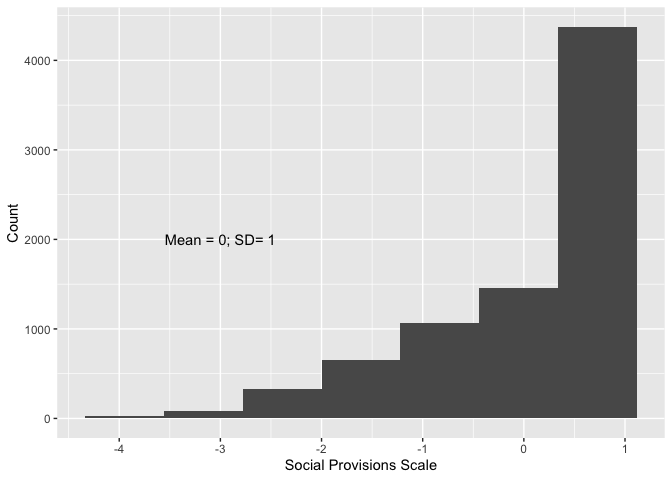

![]()
Statements and Declarations
The authors have no competing interests to declare that are relevant to the content of this article. The datasets analysed in this study are available to download from the UK Data Service (Wave 1: Anders et al., 2024a; Wave 2: Anders, 2024). The study received full ethical approval from the UCL Institute of Education Research Ethics Committee (REC1660). It is registered with the UCL Data Protection Office (Z6364106/2022/06/30).
Acknowledgements
This work was supported by UK Research and Innovation via their COVID-19 response fund [grant number ES/W001756/1] and their Economic and Social Research Council [grant number ES/X00015X/1]. For Felicity.
1 Introduction
The COVID-19 pandemic and the disruption it caused had substantial short-term effects on young people’s lives around the world, with evidence of significant impacts on young people’s wellbeing and mental health (De France et al., 2022; Wolf & Schmitz, 2024). Young people in England, the focus of this paper, were no exception: extended periods in which in-person schooling was suspended (Anders et al., 2024b) interrupted pupils’ learning (Jakubowski et al., 2025) and social lives (Kalenkoski & Pabilonia, 2024), with consequent rises in loneliness a clear symptom of this (Kung et al., 2023). This widespread disruption had widely documented short-term effects on young people’s wellbeing (e.g. Attwood & Jarrold, 2023; Banks & Xu, 2020; Neugebauer et al., 2024; Newlove-Delgado et al., 2021; Quintana-Domeque & Zeng, 2023), the magnitude of which was found to be linked with the intensity of lockdown restrictions (Owens et al., 2022), and the immediacy of which is reflected in wellbeing increasing and decreasing as restrictions tightened and eased (Creswell et al., 2021). A review by Kauhanen et al. (2023) summarised the international picture as “a longitudinal deterioration in symptoms for different mental health outcomes especially for adolescents and young people”.
Existing analyses suggest that effects of the disruption were unequal, often exacerbating existing demographic inequalities in society, including those associated with socioeconomic status (e.g., Ravens-Sieberer et al., 2022), gender (e.g., Anders et al., 2023; Davillas & Jones, 2021), and ethnicity (e.g., Proto & Quintana-Domeque, 2021). Wolf & Schmitz (2024) finds that older adolescents were particularly affected, perhaps as these are such formative years for social relationships and critical years for education and subsequent transitions.
Variation in experiences and support during the pandemic has also been found to be important for young people’s wellbeing. Restrictions on social activities and the closure of schools reduced physical activity for some, which has been linked to worse mental health outcomes (Samji et al., 2022); other aspects of the pandemic are likely to have exacerbated the prevalence of adverse life events that previous studies have shown affect wellbeing (Cleland et al., 2016). Conversely, social support has been identified as a potential buffer to negative impacts (Demaray et al., 2005; Racine et al., 2021; Siedlecki et al., 2014) of such negative stressors. These highlight the potential importance of experiences and social support during the pandemic for young people’s wellbeing and, hence, the need to consider these in understanding differences in wellbeing.
While short-term impacts are important, we should be especially concerned if the impacts of the pandemic have continued to affect young people’s lives, including their subjective wellbeing, once restrictions ended. Concern was expressed from early in the pandemic that its negative effects on wellbeing would persist (Sonuga-Barke & Fearon, 2021), something that has been identified in some (Quintana-Domeque & Proto, 2022) but not all (Henseke & Schoon, 2025) studies of the general population. We explore the extent to which young people’s own perceptions of the ongoing impact of the pandemic on their wellbeing are associated with their post-pandemic subjective wellbeing, following in the spirit of research that seeks to understand the informational value of individuals’ own assessments of their situation (e.g. Fernandez-Urbano & Samuel, 2024 on perceived coping with the context of the pandemic).
Moreover, we should care about inequalities in young people’s wellbeing whether or not these are (entirely) due to the pandemic. Indeed, we may be more concerned about the persistence of inequalities that pre-date the pandemic — including in gender (Yoon et al., 2023) and socioeconomic status (Verhulst & Tiemeier, 2020) — for which there is no particular reason to expect them to subside. As such, taking stock of the current situation is important in its own right given correlation between subjective wellbeing and later economic and wider outcomes (Deaton, 2008; Lyubomirsky et al., 2005).
In our analyses of these issues, we are guided by Social Production Function (SPF) theory (Ormel et al., 1999), which enumerates five components contributing to subjective well-being: stimulation, comfort, status, behavioural confirmation, and affection. While this study does not engage individually with all five factors, SPF nevertheless provides a helpful framework, including in distinguishing between long-term factors such as status, linked with socioeconomic and demographic characteristics, and more acute potential impacts of changes to stimulation, comfort and affection presented by the disruption of the pandemic and specific events during its course. Furthermore, the potential buffering role of social support can be seen as integral to the SPF components of status and affection. Focussing particularly on the context of the COVID-19 pandemic, Chesters (2025) posit that its restrictions may have negatively affected young people’s access to affection, when not able to spend time with friends and extended family; stimulation, due to restrictions on activities; comfort, both material through potential financial distress, and emotional through adverse life events; and behavioural confirmation, through the disruption to routines and societal expectations.
Using data from the COVID Social Mobility & Opportunities study (COSMO) — a representative cohort study of over 13,000 young people in England aged 14-15 at pandemic onset whose education and post-16 transitions were acutely affected by the pandemic’s disruption through their remaining education and subsequent transitions — we provide new evidence regarding these issues, specifically through the following research aims:
- to estimate differences in post-pandemic wellbeing among this cohort by demographic characteristics;
- to validate and quantify the informational value of young people’s own perceptions of the impact of the pandemic on their wellbeing, along with the extent to which this may be explained by differences in social support and;
- to explore the role of adverse experiences during the pandemic in explaining differences in post-pandemic wellbeing, again accounting for the potential importance of differences in social support.
The paper proceeds as follows. In Section 2, we describe the data that we use, the steps taken to prepare it for analysis, and conduct descriptive analyses to provide initial evidence on our research aims. In Section 3, we describe our use of regression modelling, presenting results in Section 4. Finally, we discuss our findings and conclude in Section 5, noting implications for policy and practice.
2 Data and descriptive analyses
We use data from the COVID Social Mobility & Opportunities study (COSMO), a longitudinal cohort study following a representative sample of young people (and their parents) who were in Year 10 (i.e., aged 14-15) at pandemic onset (March 2020), who participated at both waves 1 (Anders et al., 2024a), carried out October 2021–March 2022 (ages 16-17), and 2 (Anders, 2024), carried out October 2022–March 2023 (ages 17-18). In both cases the majority of interviews were carried out within the first two months of fieldwork; we also control for month of interview in our regression models (further details below).
COSMO has a clustered and stratified design with oversampling of those from smaller (e.g., ethnic minorities), more disadvantaged and harder to reach demographic groups to improve statistical power when exploring inequalities between such groups. Furthermore, there was initial non-response and attrition between the first two waves. As such, it is important to account for the deliberate and modelled sample disproportionalities, as well as implications of clustering and stratification for statistical inference. We take these features into account in analyses using study-provided clustering and stratification variables, and design and non-response weights (Adali et al., 2022, 2023).
To ensure consistency across analyses, we restrict our sample to those with valid data on the key variables for our analyses. This includes the primary outcome of self-reported wellbeing score, along with key predictors and demographic variables. However, we are mindful of the potential implications of sample selection caused by complete case analysis. We robustness check our findings in Section 9, re-running our core analyses having only restricted the sample based on the primary outcome (wellbeing score) and the main predictors (impact of pandemic on mental health and adverse life events reporting) and multiply imputing across 10 datasets all other predictors using a highly flexible classification and regression tree approach (Lumley, 2019; van Buuren & Groothuis-Oudshoorn, 2025).
2.1 Subjective wellbeing
To measure self-reported wellbeing, we use the UK Office for National Statistics’ official measure of life satisfaction (Office for National Statistics, 2018), which is widely recognised as an important dimension of subjective wellbeing (Petersen et al., 2022). This asks participants to respond to the prompt “Overall, how satisfied are you with your life nowadays?” on a scale ranging from 0 “Not at all satisfied” to 10 “Completely satisfied”. This measure has been used in national UK surveys since 2011 and increasing numbers of academic studies, hence providing a useful benchmark for this concept in UK-based surveys. This measure is found to be a reliable measure of subjective wellbeing in young people (Levin & Currie, 2014), performing as well as the more in-depth Satisfaction with Life Scale (Jovanović, 2016), for example, although we do recognise that it will not capture all dimensions of wellbeing (Ruggeri et al., 2020). It is also worth noting that, while they are distinct constructs, a clear correlation between lower wellbeing and increased risk of poor mental health (Lombardo et al., 2018).
As COSMO was established in response to the pandemic, there are no pre-pandemic baseline measures. As such, we emphasise that our estimates of differences are between individuals all of whom have experienced the pandemic, but experienced it differently, rather than between their current situation and a counterfactual in which the pandemic did not happen. Others have used survey experiment methods to attempt to get closer to such a counterfactual (Andreoli et al., 2024), or pre-existing longitudinal studies to explore change in mental health across the pandemic period (Henseke & Schoon, 2025).
We have measures of wellbeing from two post-pandemic waves and use these to explore evidence of change in wellbeing between the two waves both overall, and between sub-groups of the data where this might be expected. We plot the overall distribution of reported wellbeing in both Waves 1 (age 16/17) and 2 (age 17/18) in Figure 1.

Notes: Histogram weighted for survey design and non-response.
Young people report a mean wellbeing score of 6.41 in Wave 1 and 6.43 at Wave 2, with the standard deviation declining slightly from 2.05 to 1.97. These are not particularly substantial changes, providing little evidence of change between these two post-pandemic time points. However, in interpreting this (lack of) aggregate change, we must be mindful of this cohort’s wider context.
One interpretation would be that, as we know there was a decline in mental health and wellbeing among young people at the onset of the pandemic and its restrictions (Newlove-Delgado et al., 2021), we would hope to see an upward trajectory in wellbeing in subsequent years to be confident of a ‘bounce back’, with this lack of change suggesting a plateau at a lower level than before the pandemic. That could be the case. A finding of minimal change is consistent with the findings of Henseke et al. (2022) (albeit for a wider age range of young people aged 16-29). Similarly, the UK Office for National Statistics’ annual population survey also suggests that life satisfaction has not returned to pre-pandemic levels in the general population (Office for National Statistics, 2023).
Fundamentally, using these data alone we are unable to adjudicate between multiple potential plausible scenarios. Others, using a wider range of datasets are better placed to do so. For example, Henseke & Schoon (2025) suggest that young people’s wellbeing may have already returned to pre-pandemic levels, thus explaining a lack of trend for this reason. These findings would also be consistent with an upward post-pandemic trend being cancelled out by a countervailing age effect (for example) implied by the wider literature on life course wellbeing (Blanchflower, 2021).
However, this is not our paper’s focus. Aggregate stability does not mean that there are not individual-level differences or differential change in wellbeing. The correlation between the reported measures in Waves 1 and 2 is 0.54. While some of this likely reflects natural fluctuation in young people’s wellbeing due to daily idiosyncratic shocks, it provides a basis to explore evidence of systematic difference in change between the two waves, along with the differences in levels at each wave.
2.3 Demographic characteristics
The impact of the pandemic on young people’s wellbeing differed depending upon their demographic characteristics (e.g., Anders et al., 2023). Both to estimate differences between young people based on these characteristics, and to control for these measures in other analyses, we make use of the rich set of demographic measures collected in COSMO. Specifically, we construct the following measures of demographic characteristics.
- Gender: There are longstanding concerns about differences in wellbeing by gender (Yoon et al., 2023), which have only been exacerbated by the pandemic (Davillas & Jones, 2021). We use young people’s reported gender at either wave (giving precedence to the subsequent reports if they differ) and group cohort members into ‘female’, ‘male’ and ‘non-binary+’, where the final category is a combination of those who explicitly report being non-binary or choose to identify in any other way (since these other groups are too small for analysis).
- Ethnicity: As with gender, our measure is based on self-reports at either wave (where a subsequent report is given precedence if they differ), young people are grouped into ‘White’, ‘Mixed’, ‘Black’, ‘Asian’ and ‘Other’. While these categories are broad, they are chosen for consistency with the UK’s major ethnic group classifications while avoiding groups that are too small for analysis purposes.
- Parental education: Generally viewed as a core component of socioeconomic status, which may affect wellbeing through the status component of the SPF (Ormel et al., 1999), we construct our measure using the highest level of education reported by either parent at either wave, grouping parents into ‘Graduate’, ‘Below Graduate’ and ‘No Quals’.
- Housing tenure: Housing tenure is another component of socioeconomic status, hence with potential implications for young people’s wellbeing. Our measure is based on parental reports at either wave (giving precedence to the subsequent if they differ), grouping families into those who own their home (either with a mortgage or outright; ‘Own House’) and all others (predominantly social and private renting; ‘Other’).
- Area deprivation: We also include an area-based measure of deprivation of participants’ homes, both as a correlate of socioeconomic stats due to residential sorting and given more direct implications this can have for potentially wellbeing-enhancing amenities. COSMO provides decile groups of the UK’s Income Deprivation Affecting Children Index (IDACI), constructed at the ‘lower-layer super-output area’ (the smallest geographical areas in UK statistical geography, containing an average population of 1,500).
To allow exploration of differences in wellbeing by socioeconomic status (SES) in a simple way, we create a combined index of SES (with mean 0 and standard deviation 0 in our analysis sample) across our measures of parental education, housing tenure and home neighbourhood deprivation. We describe how we do this and demonstrate that it captures the underlying SES measures on which it is based in Section 6.1.
Having constructed this set of measures, we report the prevalence of demographics in our cohort along with mean levels of self-reported wellbeing by these categories at Wave 1, Wave 2, and mean difference between the two in Table 1.
| Characteristic | N | Prevalence (%) | Wave 1 | Wave 2 | Difference |
|---|---|---|---|---|---|
| Overall | 6.41 | 6.43 | 0.017 | ||
| 1 | 7,723 | ||||
| Gender | |||||
| Male | 3,475 | 50 | 6.76 | 6.76 | 0.007 |
| Female | 4,030 | 48 | 6.13 | 6.15 | 0.021 |
| Non-Binary+ | 218 | 2.6 | 4.90 | 5.04 | 0.136 |
| Ethnicity | |||||
| White | 4,877 | 77 | 6.43 | 6.44 | 0.014 |
| Mixed | 477 | 5.7 | 6.09 | 6.09 | -0.008 |
| Black | 1,503 | 10 | 6.51 | 6.48 | -0.030 |
| Asian | 684 | 5.0 | 6.34 | 6.43 | 0.094 |
| Other | 182 | 2.2 | 6.44 | 6.64 | 0.201 |
| Parental Education | |||||
| Graduate | 3,807 | 55 | 6.48 | 6.45 | -0.024 |
| Below Graduate | 2,962 | 36 | 6.35 | 6.37 | 0.024 |
| No Quals | 871 | 7.6 | 6.25 | 6.54 | 0.286 |
| Unknown | 83 | 0.8 | 6.42 | 6.37 | -0.049 |
| Housing Tenure | |||||
| Own House | 4,224 | 65 | 6.50 | 6.54 | 0.037 |
| Other | 3,499 | 35 | 6.24 | 6.22 | -0.020 |
| Unknown | 0 | 0 | |||
| IDACI Quintile Group | |||||
| 1 (High Deprivation) | 2,306 | 22 | 6.24 | 6.23 | -0.007 |
| 2 | 1,678 | 19 | 6.39 | 6.42 | 0.032 |
| 3 | 1,351 | 19 | 6.34 | 6.46 | 0.118 |
| 4 | 1,231 | 20 | 6.54 | 6.56 | 0.023 |
| 5 (Low Deprivation) | 1,157 | 20 | 6.56 | 6.49 | -0.072 |
| SES Quintile Groups | |||||
| 1 (Low SES) | 2,257 | 20 | 6.26 | 6.26 | 0.005 |
| 2 | 1,770 | 20 | 6.28 | 6.37 | 0.088 |
| 3 | 1,405 | 20 | 6.42 | 6.40 | -0.019 |
| 4 | 1,266 | 21 | 6.53 | 6.53 | 0.006 |
| 5 (High SES) | 1,025 | 19 | 6.58 | 6.58 | 0.002 |
| Notes: Reporting means where otherwise specified. All estimates are weighted and account for the complex survey design. The difference is calculated as Wave 2 - Wave 1. | |||||
50% of the sample are male, 48% are female and 2.6% are non-binary or report in another way. Average reported wellbeing differs substantially between these groups with boys (6.76 in Wave 1) reporting higher levels of wellbeing than girls (6.13). This is consistent with existing work on inequalities in young people’s wellbeing (e.g. Anders et al. (2023), Davillas & Jones (2021)), both before the pandemic and as a result of its impact. Non-binary+ young people report lower levels of wellbeing still than girls, although there is evidence of an increase for this group between Waves 1 and 2; we should be mindful, however, of the smaller sample size for this group.
By ethnicity, the highest levels of reported wellbeing are for Black young people (6.51 in Wave 1), followed by White young people (6.43), with the lowest among young people who reported a Mixed ethnicity. These differences are small and, other than the small group of young people placed into the Other category, there is little evidence of change over time.
There is a broadly consistent gradient in wellbeing across our quintile groups of socioeconomic status, from 6.26 to 6.58 (both for Wave 1 but with a similar picture in Wave 2). Again, these appear to be rather small differences and there is no evidence of consistent change between the two waves.
Overall, this initial analysis highlights gender as the most important demographic difference in wellbeing for this sample of young people in England.
2.4 Perceived ongoing impact
Next, we seek to quantify differences in young people’s wellbeing by their own perceptions of the ongoing impact of the pandemic. This takes seriously young people’s own reports of the ongoing impact of the pandemic on their wellbeing. To capture these perceptions, we use a question asked to young people at the second wave of COSMO, asking “Would you say the pandemic is still having an effect on [your mental wellbeing], whether positive or negative?” If they agree with this question then they are subsequently asked to distinguish whether this impact is positive, negative or they don’t know.
| Variable, N = 7723 | No (64%)1 | Negative (32%)1 | Don’t know (2%)1 | Positive (2%)1 | Overall (100%)1 | p-value2 |
|---|---|---|---|---|---|---|
| Wave 1 | 6.81 | 5.62 | 6.37 | 6.40 | 6.41 | <0.001 |
| Wave 2 | 6.91 | 5.46 | 6.29 | 6.48 | 6.43 | <0.001 |
| Difference | 0.11 | -0.16 | -0.08 | 0.08 | 0.02 | <0.001 |
| 1 Mean | ||||||
| 2 Design-based KruskalWallis test | ||||||
| Notes: All estimates are weighted and account for the complex survey design. The difference is calculated as Wave 2 - Wave 1. | ||||||
Table 2 shows that 64% of young people report that the pandemic is continuing to have an impact on their mental wellbeing, with 32% of these reporting that this impact is negative. Perhaps unsurprisingly, much smaller proportion of young people report that the ongoing impact is positive (2%) or that they don’t know if the impact is positive or negative (2%).
Those who report no impact of the pandemic on their mental wellbeing have the highest self-reported wellbeing (6.81 in Wave 1; 6.91 in Wave 2), while those who report that it had a negative impact on their mental wellbeing report the lowest (5.62 in Wave 1; 5.46 in Wave 2). Those who say it is still having an impact but that it is positive, or that they don’t know if it is positive or negative, report somewhere between the other two groups but, as noted, these are a very small proportion of the sample.
These groups are also distinguished by changes in reported wellbeing between Waves 1 and 2. Those who report that the pandemic is continuing to have a negative impact on their mental wellbeing do, indeed, report a decline in wellbeing (-0.16) between the two waves, while those who report that it has had no impact (0.11) or that it is having a positive impact report an increase (0.08). Those who report that it is still having an impact but that they don’t know if it is positive or negative report a slight decline (-0.08). These last two groups are small, so these estimates should be treated with caution. In subsequent analyses we combine these two groups with the group who report no impact, for an overall comparison of those who report an ongoing negative impact with the rest of the sample.
2.5 Adverse life events
Finally, we explore whether subjective wellbeing is associated with experiencing adverse life events during the COVID-19 pandemic. We report details of the construction of this measure in Section 6.2, creating a composite index of adverse life events using polychoric principal component analysis (PCA) of the ten adverse life events available in the data and dividing the sample into tertile groups based on the resulting index.
| Variable, N = 7723 | Fewer (36%)1 | Average (30%)1 | More (33%)1 | Overall (100%)1 | p-value2 |
|---|---|---|---|---|---|
| Wave 1 | 7.04 | 6.46 | 5.67 | 6.41 | <0.001 |
| Wave 2 | 7.02 | 6.47 | 5.75 | 6.43 | <0.001 |
| Difference | -0.03 | 0.00 | 0.08 | 0.02 | 0.2 |
| 1 Mean | |||||
| 2 Design-based KruskalWallis test | |||||
| Notes: All estimates are weighted and account for the complex survey design. | |||||
We find that mean wellbeing score differs by experience of such events (Table 3). Wellbeing is lower for those who experience a higher prevalence of adverse life events, ranging from 7.04 for those in the fewer adverse life events tertile group to 5.67 for those in the more adverse life events tertile group. This pattern is consistent across Waves 1 and 2, but there is no significant evidence of difference in the patterns of change over time.
However, as with all our descriptive analyses, we are mindful that there is the potential for differences in socioeconomic and demographic characteristics between by experience of adverse life events. For this reason, as well as for our other analyses, we use regression modelling to unpack these findings further.
3 Analytical approach
To extend our descriptive analyses and, hence, provide a more nuanced understanding of the factors associated with young people’s wellbeing since the pandemic, we use regression modelling. All analyses are carried out using R (R Core Team, 2024), with the survey package (Lumley et al., 2025) used to account for the complex survey design of the data, including design and non-response weights, and adjustments to statistical inference due to stratification and clustering of the sample.
We break this section into three sub-sections, aligned with the research aims in this paper: demographic differences in subjective wellbeing; the importance of perceived ongoing impact of the pandemic; and the importance of adverse life events during the pandemic.
3.1 Demographic differences in subjective wellbeing
First, we use linear regression models to explore differences in young people’s wellbeing. These models all take the form
\[ LifeSat_{it} = \beta_0 + \beta'_{1} SES_{i} + \beta'_{2} Gender_{i} + \beta'_{3} Ethnicity_{i} + X'_{i} + \varepsilon_{it} \tag{1}\]
where \(LifeSat\) is wellbeing score for person \(i\) at time \(t\), \(SES\) is a vector of binary variables for quintile groups of SES (leaving the highest SES quintile group as the omitted category), \(Gender\) is a vector of binary variables for gender (Female and Non-binary+, leaving Male as the omitted category), \(Ethnicity\) is a vector of binary variables for ethnicity (Asian, Black, Mixed, Other, leaving the largest category, White, omitted as the baseline), \(X\) is a vector of covariates varying between model specifications discussed below, and \(\varepsilon\) is the error term. We estimate these models separately for each time point of the survey, and then again for Wave 2 with an additional covariate of Wave 1 wellbeing score to provide estimates of difference adjusting for Wave 1 wellbeing as a baseline.
| Variable | L1 | L2 | L3 | L4 | L5 | L6 | L7 | L8 |
|---|---|---|---|---|---|---|---|---|
| Gender | Included | Included | Interacted w/ Ethnicity and SES | Included | Interacted w/ Social Support | Included | ||
| Ethnicity | Included | Included | Interacted w/ Gender and SES | Included | Interacted w/ Social Support | Included | ||
| SES | Included | Included | Interacted w/ Gender and Ethnicity | Included | Interacted w/ Social Support | Included | ||
| Social Support | Included | Interacted w/ Gender, Ethnicity and SES | Included | |||||
| Adverse Events | Included |
Notes: L1-L7 refer to the model number. SES = Socioeconomic status.
We estimate a series of models summarised in Table 4, beginning with simple models including gender (L1), ethnicity (L2), and SES (L3) entered separately, replicating the descriptive analyses and unconditional estimates of differences in wellbeing reported in Table 1. Next, we include all three demographic characteristics at the same time in L4, along with the addition of a month of interview variable to allow for potential confounding due to the timing of the survey. This model, hence, provides estimates of demographic differences in wellbeing, conditional on the other demographic characteristics included. We then explore potential intersectional differences in wellbeing between demographics in L5 (Codiroli Mcmaster & Cook, 2019) by including a full set of interaction terms between our SES, gender and ethnicity variables.
Next, motivated by understanding the potential importance of social support in explaining these differences, we add social provisions score in L6. Differences between the coefficients on our demographic characteristics between L4 and L6 will, hence, provide information on the extent to which differences in social support explain the unadjusted differences.
L7 explores whether the importance of social support varies by demographic characteristics. As with L5, we include interaction terms, this time between our demographic characteristics and the two social support measures to allow for the moderation of the relationship between these measures and wellbeing.
Finally, L8 explores the importance of adverse life events in explaining demographic differences in wellbeing. We include the adverse life events index in this model, along with the demographic characteristics and social support measures. Comparing coefficients on the demographic characteristics in L6 and L8 hence provides information on the extent to which differences in adverse life events may explain demographic differences in wellbeing. We do not model the interaction between adverse life events and demographic characteristics at this point as we explore this in a subsequent section.
3.2 Importance of perceived impact of the pandemic on wellbeing
In this section, we again use linear regression models to estimate differences in subjective wellbeing. However, this time we focus on differences explained by young people’s perceptions of the ongoing impact of the pandemic on their life. The models take the form:
\[ LifeSat_{it} = \beta_0 + \beta'_{1} PandemicImpactPercep_{i} + X'_{i} + \varepsilon_{it} \tag{2}\]
where definitions are per Equation 1, and \(PandemicImpactPercep\) is a binary variable indicating that person \(i\) reports that the pandemic is continuing to have a negative impact on their life. We, again, estimate separate models for each time point, as well as for Wave 2 adjusting for Wave 1.
| Variable | P1 | P2 | P3 | P4 |
|---|---|---|---|---|
| Perceived Impact | Included | Included | Included | Interacted with Demographics, SES and Social Support |
| Demographics | Included | Included | Interacted with Perceived Impact | |
| SES | Included | Included | Interacted with Perceived Impact | |
| Social Support | Included | Interacted with Perceived Impact |
Notes: P1-P4 refer to the model number. SES = Socioeconomic status.
The series of models is summarised in Table 5, with the first model (P1) replicating our descriptive findings by including no additional covariates, meaning the coefficient on \(PandemicImpactPercep\) reports the difference between those who report that the pandemic had a negative impact on their mental wellbeing and the rest of the cohort.
Next, in P2, we include demographic (gender, ethnicity), methodological (month of survey) and socioeconomic status (parental education, housing tenure, and area-level deprivation) covariates. We do this, rather than including combined SES quintile groups, now that we are not trying to interpret an overall SES association but rather adjust for these as flexibly as possible. Our focal coefficient from this model thus estimates the difference in wellbeing associated with a continuing negative perception of the pandemic on wellbeing among those with similar socio-demographic characteristics.
We then explore the extent to which differences in wellbeing associated with a negative perceived impact of the pandemic are explained by social support. In P3, we add social provisions score and compare the estimate on our focal variable coefficient between models P2 and P3.
Finally, in P4, we explore evidence of variation in the difference in wellbeing associated with a negative perceived impact of the pandemic by demographic and social support measures. We do this by including a full set of interaction terms between our focal variable and the socio-demographic and social support variables in P3.
3.3 Importance of adverse life events during the pandemic
For our final aim, we explore the importance of adverse life events during the pandemic in explaining young people’s wellbeing post-pandemic.
To do so, we use linear regression models to explore the extent to which differences in self-reported wellbeing depend on the adverse life experiences they faced, including conditional on their perception of the impact of the pandemic on their wellbeing. The models used for this purpose take the form:
\[ LifeSat_{it} = \beta_0 + \beta'_{1} TAdverseEventIndex_{i} + X'_{i} + \varepsilon_{it} \tag{3}\]
where definitions are per Equation 1, and \(TAdverseEventIndex\) is a vector of binary variables indicating person \(i\)’s location in the distribution of the adverse life event index (more and average, leaving fewer as a baseline). We, again, estimate separate models for each time point, as well as for Wave 2 adjusting for Wave 1. When modelling Wave 1 wellbeing, a variant of our events index is used based on Wave 1 event reports only.
| Variable | E1 | E2 | E3 | E4 | E5 |
|---|---|---|---|---|---|
| Adverse Events | Included | Included | Included | Included | Interacted with Demographics, SES, Social Support and Perceived Impact |
| Demographics | Included | Included | Included | Interacted with Adverse Events | |
| SES | Included | Included | Included | Interacted with Adverse Events | |
| Social Support | Included | Included | Interacted with Adverse Events | ||
| Perceived Impact | Included | Interacted with Adverse Events |
Notes: E1-E5 refer to the model number. SES = Socioeconomic status.
Our models are summarised in Table 6, with the first model (E1) again replicating our descriptive findings by including only the tertile groups of the adverse life events index. In preliminary work, we explored alternative modelling approaches including using the index as a continuous variable or including the individual adverse life events, as listed in Section 6.2. Including tertile groups provided the most interpretable results without substantively affecting model fit.
Next, in E2, we add demographic characteristics (gender, ethnicity), socioeconomic status (parental education, housing tenure, and area-level deprivation), and month of survey. This model thus estimates the difference in wellbeing associated with greater experiences of adverse life events during the pandemic among those with similar socio-demographic characteristics, as well how much distribution of events across socio-demographic groups explains wellbeing differences.
We then explore how much differences in wellbeing associated with adverse life events are explained by social support. In E3, we add social provisions score and compare the estimate on our focal variable between models E2 and E3. This is very similar to model L6, but with adverse life events as our focus so these are entered using the tertile groups to aid interpretation.
Next, we include perceived ongoing impact of the pandemic (focal variable in the previous section). As we hypothesise that at least some of the formation of ongoing perceptions of negative impact from the pandemic is due to experience of adverse events, this model (E4) is not a reliable guide to the association between adverse events and wellbeing: including the perception variable is over-controlling. However, the model is useful in comparison with P3 in demonstrating how much of the difference in wellbeing associated with a negative perception of the ongoing impact of the pandemic on wellbeing is explained by experience of adverse life events.
Finally, analogously to previous sections, we include interactions of our focal variables (experience of adverse life events) with our socio-demographic and social support measures in model E5.
4 Results
In this section, we report results from the regression models outlined in the previous section, beginning with demographic differences in wellbeing Section 4.1, then the importance of perceived ongoing impact of the pandemic Section 4.2 and, finally, the importance of adverse life events during the pandemic Section 4.3. We report our results graphically, focussing attention on the estimates pertinent to addressing our research aims and allowing for easy comparison across models. We provide full regression tables of the results for each model, which are included in Section 7 for reference.
4.1 Demographic differences in subjective wellbeing
First, we explore overall differences in wellbeing, through the series of models summarised in Table 4. The core results are plotted in Figure 3 for gender, Figure 9 for ethnicity, and Figure 10 for SES. In each case, results are presented for Wave 1, Wave 2, and Wave 2 adjusted for Wave 1, with the discussion starting out with Wave 1 in each case, before discussing notable differences in Wave 2, or Wave 2 adjusted for Wave 1. Full results tables for these models are reported in Section 7: Table 9 for Wave 1, Table 10 for Wave 2, and Table 11 for Wave 2 adjusted for Wave 1.

In the case of gender (Figure 3), we essentially replicate the descriptive findings (Table 1) in L1, finding that girls’ wellbeing is 0.63 points lower than for boys, and a larger reduction for those grouped as non-binary+ where the reduction is 1.9 points compared to boys. There is essentially no change when we adjust for ethnicity and SES in L4, with the differences remaining 0.63 points for girls and 1.9 points for non-binary+ young people.
Part of the difference in wellbeing among non-binary+ young people is explained by variation in social support: when including social provisions in L6 the difference reduces to 1.4 points compared to boys. This makes a similar difference at Wave 2, but no difference for girls at any wave, nor for non-binary+ youth when considering Wave 2 wellbeing adjusted for Wave 1 wellbeing.
A small part of the remaining difference is explained by experiences of adverse life events, reducing to 1.2 for non-binary+ young people and to 0.5 for girls, although the difference between L6 and L8 is not statistically significant for the non-binary+ group, nor quite statistically significant at the 5% level for girls.
We do not find consistent differences in wellbeing by ethnicity or gender after adjusting for covariates; reporting of these results may be found in Section 8.
4.2 Perceived continuing impact of the pandemic on wellbeing
Next, we discuss differences in wellbeing by perceived continuing impact of the pandemic using the models summarised in Table 5. Core results are plotted in Figure 4. Full tables of results for these models are reported in Section 7, Table 12 (Wave 1), Table 13 (Wave 2) and Table 14 (Wave 2 adjusting for Wave 1).

Results from unconditional model P1 indicate that young people who perceive a negative continuing impact of the pandemic on their wellbeing report 1.1 points lower wellbeing score than those who do not perceive such an impact. Perhaps surprisingly, given the greater time that has elapsed since the pandemic, this difference is larger at Wave 2, with a 1.4-point difference between these two groups. However, we should recall that the report of a negative continuing impact of the pandemic is collected at Wave 2, so may reflect this being more contemporary with the report.
A fairly small part of the difference in wellbeing score is explained by inclusion of demographic characteristics (in P2) and social support (in P3). The differences are reduced to 0.85 points and 1.2 points at Wave 1 and Wave 2, respectively, once all of these covariates have been included. This highlights a significant unexplained component of wellbeing unexplained by young people’s observable characteristics and social support — although we will return to whether more of this difference can be explained by adverse life events during the pandemic in the next section.
The unconditional difference in wellbeing by perceived continuing impact of the pandemic on wellbeing at Wave 2 is lower in models where we have adjusted for Wave 1 wellbeing (0.85 points). However, demographic and social support controls make essentially no difference for this outcome, with the difference remaining 0.81 points once these have been included, with a very similar magnitude to that seen in the fully adjusted model for Wave 1.
We do not find evidence that social support mediates differences in wellbeing by perceived impact of the pandemic (see Figure 12 in Section 8), nor that the differences in wellbeing associated with perceived impact of the pandemic are moderated by young people’s demographic characteristics of socioeconomic background (see Section 7).
4.3 Adverse life events
Next, we turn to the importance of adverse life events for young people’s wellbeing. This is explored through the series of models summarised in Table 6; full results are reported in Table 15, Table 16 and Table 17 in Section 7. The core results are plotted in Figure 5, demonstrating the association unconditionally (E1), adjusting for demographic measures (E2), and adjusting also for social support (E3).

Those who experienced more adverse life events during the pandemic report substantially lower wellbeing, with the unconditional difference between the “fewer” and “more” adverse life events tertile groups being 1.4 points at Wave 1 and 1.3 points at Wave 2. A small part of this is explained by demographics (in E2), while more is explained by social support (in E3), especially for those who experienced the most adverse life events (i.e., the More Adverse Events Tertile Group), bringing the gap between low and high groups to 0.85 points at Wave 1 and 0.88 points at Wave 2.
The patterns are similar but substantially attenuated when considering Wave 2 differences controlling for Wave 1 wellbeing. Nevertheless, there remains a substantial difference (0.36 points) in wellbeing at Wave 2 by adverse events experienced after controlling for Wave 1 wellbeing, demographic characteristics and social support.

Building on the models reported in Figure 5, we also explore whether the association between adverse life events and wellbeing is mediated by the perceived ongoing impact of the pandemic on wellbeing, plotting results in Figure 6. We find only a small part of perceived ongoing impact of the pandemic on wellbeing is explained by experience of adverse life events during the pandemic.
We also explored whether there was evidence that adverse events matter more for some groups than others, but find little evidence of this. These results are reported in column E5 of Table 15, Table 16 and Table 17 in Section 7.
5 Discussion, conclusions and limitations
This study contributes to existing literature on young people’s wellbeing in England in the aftermath of the COVID-19 pandemic by exploring levels of wellbeing at two time points since the pandemic and the factors associated with these levels. We build on existing work showing that the pandemic has had a negative impact on young people’s wellbeing (e.g., Mansfield et al., 2022), along with evidence of recovery in wellbeing in the latter phases of the pandemic (Henseke et al., 2022; Henseke & Schoon, 2025), although we emphasise that our findings about the state of post-pandemic inequalities do not imply that these have been caused by the pandemic and its restrictions. We have, however, explored the ongoing role of the pandemic through the importance of young people’s own perceptions of its ongoing impact on their wellbeing, as well as the role of adverse life events experienced during the period.
Our results contribute to evidence on gender differences in wellbeing (e.g., Davillas & Jones, 2021). Girls and those who identify as non-binary or in another way report lower wellbeing scores (on a scale from 1-10 around 0.5 for girls; around 1.5 for non-binary+ young people) than boys. This persists after adjusting for other demographic characteristics, self-reported levels of social support, and experience of adverse life events, contributing to a picture of these inequalities as grounded in a complex set of societally-mediated causes (Guo et al., 2024), which also raise the possibility of variations by gender in the relative importance of different aspects of the social production function (SPF) itself (Steverink et al., 2020), rather than simply that the function’s inputs differ by gender. That said, without analysis of all dimensions of the SPF, this study is not well-placed to provide strong evidence on this point. These inequalities are substantial and relevant to the higher rates of mental health challenges for those in these groups (Yoon et al., 2023). Our findings for non-binary+ young people support limited existing evidence (Marquez et al., 2023), but we emphasise that the small sample size of this group in our data means exercising caution in its interpretation.
Our analysis makes innovative use of young people’s own perceptions of the ongoing impact of the pandemic on their mental wellbeing in order to validate and quantify these reports. Our findings illustrate the importance of taking such reports seriously: those who indicate an ongoing negative impact in their lives have substantially lower subjective wellbeing scores — more than 1 point on a 1-10 scale — with similar differences across demographic groups. Moreover, these differences are only partially explained by demographic characteristics, social support, or adverse life events experienced during the pandemic, while there is also little evidence of differential response to a perceived negative impact by socioeconomic background or demographic characteristics. This leaves a substantial difference in wellbeing associated with this perception demonstrating that such perceptions are informative in their own right, analogously to how educational expectations (Anders, 2017) and aspirations (Hart, 2016) can be informative of young people’s educational trajectories over and above other factors. As with that literature, our finding should not be taken to mean such perceptions should be considered causal (Gorard, 2012). While it is probable that there are elements of the SPF that underly these young people’s perceptions, we argue that this does not diminish their informational value and, hence, the importance of taking them seriously (Morgan, 1998). This implies that, nuancing our previous point, there are limits on the extent to which we can target support based on demographic characteristics alone. Self-identification is likely necessary to find those most in need of support, albeit with risks since self-reporting behaviour in a survey likely differs from self-reporting for the purposes of intervention. These findings are similar in spirit to those of Fernandez-Urbano & Samuel (2024), who identify contemporaneous links between how well young people report coping with the pandemic and their subjective wellbeing. We emphasise that the analogy is far from perfect: we are not claiming that a perception of continuing negative impact on wellbeing is the same thing as reporting not coping with the situation, for example. Moreover, unlike Fernandez-Urbano & Samuel (2024), we do not find evidence of differences in response by young people’s socioeconomic status. Nevertheless, these findings align in illustrating the role of such reports in understanding young people’s wellbeing.
Adverse life events experienced during the pandemic are also found to predict lower subjective wellbeing. This is consistent with these undermining aspects of the SPF, such as affection (for events such as arguments within the home) or comfort (in situations of financial distress) (Chesters, 2025), along with previous findings that adverse life events are associated with lower wellbeing (Hombrados-Mendieta et al., 2019; McKnight et al., 2002). However, contrary to our expectations, and others’ findings (Aksoy et al., 2024; Ferreira et al., 2021; Kearns et al., 2015), we did not find evidence that social support mediates or buffers the impact of adverse life events in the context of this study. One potential reason for this is that the source of the social support matters: Lee & Goldstein (2016) find that only support from friends (not family or partners) matters in a study of the stress-buffering role of social support for loneliness. We would expect this to be the source of social support most likely to be cut off by COVID-19 restrictions, although we note that this will not be entirely the case due to the compensatory mechanism of increased use of digital contact between friends in the context of the pandemic (Juvonen et al., 2022). Nevertheless, we contend that this is unlikely entirely successfully to replicate the benefits of in-person contact (Flannery et al., 2021; Long et al., 2022). More methodologically, with hindsight we note that, while our measures of social support are contemporaneous with our wellbeing measures, they are not contemporaneous with the timing of the adverse events themselves, which may mean they are not providing an accurate depiction of perceived social support during pandemic disruption.
This study benefits from a large, representative, longitudinal dataset, with direct reports from both young people and parents to improve the quality of data collected. Nevertheless, we are mindful of the limitations of this study, most particularly that our data lacks pre-pandemic baseline measures of wellbeing, which would substantially increase our ability to understand the longer-term dynamics of the changes (or lack thereof) in wellbeing that we have observed. Furthermore, our data is drawn from a single cohort of young people in England, whose final years in compulsory education were especially disrupted by the impacts of the pandemic, which is important context in any attempt to generalise our findings to other populations. As noted above, we also emphasise the small sample size of our non-binary+ group, which limits the robustness of findings for this group.
Our findings indicate continuing challenges of inequalities in young people’s wellbeing and, hence, the importance of ongoing targeted support to overcome these. We reiterate, however, that we do not link these inequalities particularly with lingering effects of the pandemic since we did not find evidence of differences in the association between perceived continuing impact of the pandemic on wellbeing and young people’s socioeconomic or demographic characteristics. However, in some ways inequalities not linked to the pandemic are of greater concern, given little reason to expect them to subside without intervention. As such, the large differences in wellbeing associated with identifying as non-binary or in another way may suggest a particular need for support among this group, although we reiterate the small sample sizes involved in findings for those identifying as neither male nor female, making further evidence for this group especially important. The practicalities of providing support at scale are now much harder for our specific cohort, since many have now left education entirely. Nevertheless, the issues discussed will apply similarly to those still working their way through the education system who could be reached through schools and colleges. As well as the negative implications for the life experiences of these young people, ignoring this issue has potential implications for national economic performance (Deaton, 2008), including via increased risk of mental health challenges (Lombardo et al., 2018).
References
6 Appendix: Construction of measures
6.1 Construction of SES measure
To allow exploration of differences in wellbeing by socioeconomic status (SES) in a simple way, we create a combined index of SES across our measures of parental education, housing tenure and home neighbourhood deprivation. Specifically, given the categorical nature of these variables, we estimate a polychoric correlation matrix of these measures and use principal component analysis (Revelle, 2025) to extract a single component that explains maximum shared variance. Our extracted principal component score explains 65% of the overall variance of our SES measures. We standardise the measure’s distribution to have mean 0 and standard deviation 1 in our analysis sample, plot its distribution in Figure 7, and use it to split our sample into five quintile groups of equal size (accounting for sample weighting).

Notes: SES measure based on polychoric principal component analysis of parental education, housing tenure and IDACI decile group. Density plot weighted for survey design and non-response.
We demonstrate that this measure captures the underlying SES measures on which it is based in Table 7 by reporting the average levels of parental education, housing tenure and IDACI quintile group across the five quintile groups of the constructed SES measure.
| Characteristic | 1 (Low SES) N = 1,602 |
2 N = 1,598 |
3 N = 1,608 |
4 N = 1,665 |
5 (High SES) N = 1,519 |
|---|---|---|---|---|---|
| Parental Education | |||||
| Graduate | 16 | 41 | 63 | 69 | 89 |
| Below Graduate | 54 | 52 | 33 | 30 | 11 |
| No Quals | 27 | 6.3 | 3.3 | 1.4 | 0 |
| Unknown | 3.1 | 0.8 | 0.2 | 0 | 0 |
| Housing Tenure | |||||
| Own House | 10 | 49 | 75 | 90 | 100 |
| Other | 90 | 51 | 25 | 9.5 | 0 |
| Unknown | 0 | 0 | 0 | 0 | 0 |
| IDACI Quintile Group | |||||
| 1 (High Deprivation) | 76 | 31 | 1.8 | 0 | 0 |
| 2 | 23 | 43 | 29 | <0.1 | 0 |
| 3 | 1.1 | 23 | 47 | 22 | 0 |
| 4 | <0.1 | 3.6 | 18 | 60 | 17 |
| 5 (Low Deprivation) | 0 | 0.2 | 3.3 | 19 | 83 |
| Notes: Reporting column percentages within each variable. All estimates are weighted for survey design and non-response. | |||||
6.2 Construction of adverse life events measure
In Wave 1, COSMO asked participants whether they had experienced each of the following life events since the onset of the pandemic in March 2020:
- A parent/guardian or carer lost their job or business
- My family could not afford to buy enough food, or had to use a food bank
- My family could not afford to pay their bills/rent/mortgage
- I was seriously ill in hospital
- A close family member or friend is or was seriously ill in hospital
- A close family member or friend died
- Increase in number of arguments with parents/guardians
- Increase in number of arguments between parents/guardians
- Moving to a new home
- Parents/guardians separated or divorced
The question is worded to capture events whether or not they are directly attributable to the pandemic, its restrictions and disruptions, but it is reasonable to believe many were caused or exacerbated by the circumstances of the pandemic. Participants were then asked whether they had experienced these events over the past twelve months (i.e., for most participants a year since they responded to the Wave 1 survey) in Wave 2.
29% of pupils experience no events at all, while 26% experience three or more events. We report the proportion of young people experiencing each of the ten specific adverse life events in the final column of Table 8.
The substantial differences in prevalence of the events means that using a simple count of events experienced would inappropriately impose the same importance, or severity, for all the events. Instead, we allow these to differ, such that lower probability/higher impact events are given more weight by creating a composite index of adverse life events using polychoric principal component analysis (PCA) of the ten adverse life events.

Notes: Adverse events index based on polychoric principal component analysis of measured adverse life events. The index is standardised to have mean 0 and standard deviation 1 in the analysis sample. Weighted for survey design and non-response.
The first principal component explains 32% of the variance. We standardise this index (mean 0; standard deviation 1) in our analysis sample, plot the distribution in Figure 8, and split it into three groups based on the tertiles of the index (accounting for sample weighting). We label these groups as “Fewer Adverse Events Tertile Group”, “Average Adverse Events Tertile Group” and “More Adverse Events Tertile Group” to reflect the relative impact of adverse events experienced in each.
| Variable, N = 7723 | Fewer (36%)1 | Average (30%)1 | More (33%)1 | Overall (100%)1 |
|---|---|---|---|---|
| Parent lost job | 0 | 13 | 23 | 12 |
| Couldn't afford food | 0 | 2.8 | 23 | 8.4 |
| Couldn't afford bills | 0 | 4.6 | 28 | 11 |
| Seriously ill | 0 | 2.6 | 7.0 | 3.1 |
| Close family member seriously ill | 0 | 45 | 54 | 32 |
| Close family member died | 19 | 28 | 51 | 33 |
| More arguments with parents | 0 | 28 | 72 | 32 |
| More arguments between parents | 0 | 7.8 | 60 | 22 |
| Moved home | 0 | 6.6 | 16 | 7.3 |
| Parents separated | 0 | 1.5 | 10 | 3.8 |
| Number of events (grouped) | ||||
| 0 | 81 | 0 | 0 | 29 |
| 1 | 19 | 60 | 0 | 25 |
| 2 | 0 | 40 | 23 | 20 |
| 3+ | 0 | 0 | 77 | 26 |
| Number of events (mean) | 0.19 | 1.40 | 3.44 | 1.64 |
| 1 | ||||
| Notes: All estimates are weighted and account for the complex survey design. | ||||
We report the prevalence of each of the adverse life events by the three groups in Table 8. This demonstrates that these groups are capturing different levels of exposure to adverse life events, while reflecting the differential prevalence of the events. Students in the “Fewer Adverse Events Tertile Group” are unlikely to have experienced any of the events, with the exception of a close family member dying. In contrast, students in the “More Adverse Events Tertile Group” are likely to have experienced multiple events.
7 Appendix: Full regression tables
7.1 Demographic differences in wellbeing
| Characteristic |
L1
|
L2
|
L3
|
L4
|
L5
|
L6
|
L7
|
L8
|
||||||||
|---|---|---|---|---|---|---|---|---|---|---|---|---|---|---|---|---|
| Beta1 | SE | Beta1 | SE | Beta1 | SE | Beta1 | SE | Beta1 | SE | Beta1 | SE | Beta1 | SE | Beta1 | SE | |
| (Intercept) | 6.7*** | 0.062 | 6.4*** | 0.057 | 6.2*** | 0.076 | 6.6*** | 0.087 | 6.5*** | 0.117 | 6.6*** | 0.081 | 6.6*** | 0.081 | 6.6*** | 0.079 |
| Gender | ||||||||||||||||
| Male | — | — | — | — | — | — | — | — | — | — | — | — | ||||
| Female | -0.63*** | 0.057 | -0.63*** | 0.056 | -0.53*** | 0.123 | -0.60*** | 0.051 | -0.60*** | 0.051 | -0.50*** | 0.051 | ||||
| Non-Binary+ | -1.9*** | 0.216 | -1.9*** | 0.218 | -1.7*** | 0.387 | -1.4*** | 0.208 | -1.4*** | 0.230 | -1.2*** | 0.202 | ||||
| Ethnicity | ||||||||||||||||
| White | — | — | — | — | — | — | — | — | — | — | — | — | ||||
| Mixed | -0.33* | 0.133 | -0.27* | 0.127 | -0.34 | 0.278 | -0.12 | 0.128 | -0.14 | 0.124 | -0.12 | 0.126 | ||||
| Black | 0.08 | 0.086 | 0.09 | 0.087 | 0.20 | 0.191 | 0.20** | 0.078 | 0.20* | 0.077 | 0.16* | 0.075 | ||||
| Asian | -0.10 | 0.103 | 0.02 | 0.103 | 0.13 | 0.222 | 0.23* | 0.092 | 0.22* | 0.091 | 0.18* | 0.089 | ||||
| Other | 0.03 | 0.229 | 0.06 | 0.224 | 0.16 | 0.513 | 0.22 | 0.189 | 0.22 | 0.184 | 0.22 | 0.193 | ||||
| SES Quintile Groups | ||||||||||||||||
| 1 (Low SES) | — | — | — | — | — | — | — | — | — | — | — | — | ||||
| 2 | 0.03 | 0.094 | 0.00 | 0.093 | 0.05 | 0.146 | -0.04 | 0.083 | -0.03 | 0.081 | -0.03 | 0.080 | ||||
| 3 | 0.15 | 0.099 | 0.15 | 0.097 | 0.23 | 0.163 | 0.09 | 0.087 | 0.09 | 0.086 | 0.04 | 0.085 | ||||
| 4 | 0.26** | 0.090 | 0.27** | 0.089 | 0.33* | 0.140 | 0.16 | 0.082 | 0.16 | 0.082 | 0.09 | 0.081 | ||||
| 5 (High SES) | 0.30** | 0.094 | 0.30** | 0.094 | 0.36* | 0.142 | 0.21* | 0.086 | 0.21* | 0.085 | 0.12 | 0.084 | ||||
| SES Quintile Groups * Gender | ||||||||||||||||
| 2 * Female | -0.09 | 0.175 | ||||||||||||||
| 3 * Female | -0.24 | 0.185 | ||||||||||||||
| 4 * Female | -0.05 | 0.170 | ||||||||||||||
| 5 (High SES) * Female | -0.01 | 0.172 | ||||||||||||||
| 2 * Non-Binary+ | -0.23 | 0.553 | ||||||||||||||
| 3 * Non-Binary+ | 0.46 | 0.697 | ||||||||||||||
| 4 * Non-Binary+ | 0.23 | 0.588 | ||||||||||||||
| 5 (High SES) * Non-Binary+ | -1.3* | 0.587 | ||||||||||||||
| SES Quintile Groups * Ethnicity | ||||||||||||||||
| 2 * Mixed | 0.29 | 0.387 | ||||||||||||||
| 3 * Mixed | 0.26 | 0.363 | ||||||||||||||
| 4 * Mixed | -0.25 | 0.333 | ||||||||||||||
| 5 (High SES) * Mixed | 0.11 | 0.332 | ||||||||||||||
| 2 * Black | -0.02 | 0.246 | ||||||||||||||
| 3 * Black | -0.05 | 0.239 | ||||||||||||||
| 4 * Black | -0.23 | 0.287 | ||||||||||||||
| 5 (High SES) * Black | -0.35 | 0.303 | ||||||||||||||
| 2 * Asian | -0.11 | 0.220 | ||||||||||||||
| 3 * Asian | 0.07 | 0.258 | ||||||||||||||
| 4 * Asian | 0.04 | 0.387 | ||||||||||||||
| 5 (High SES) * Asian | -0.66 | 0.935 | ||||||||||||||
| 2 * Other | -0.06 | 0.551 | ||||||||||||||
| 3 * Other | 0.78 | 0.672 | ||||||||||||||
| 4 * Other | -0.15 | 0.664 | ||||||||||||||
| 5 (High SES) * Other | -0.08 | 0.949 | ||||||||||||||
| Gender * Ethnicity | ||||||||||||||||
| Female * Mixed | 0.01 | 0.249 | ||||||||||||||
| Non-Binary+ * Mixed | -0.22 | 0.617 | ||||||||||||||
| Female * Black | -0.09 | 0.161 | ||||||||||||||
| Non-Binary+ * Black | 0.43 | 0.678 | ||||||||||||||
| Female * Asian | -0.09 | 0.220 | ||||||||||||||
| Non-Binary+ * Asian | -0.92 | 1.03 | ||||||||||||||
| Female * Other | -0.36 | 0.454 | ||||||||||||||
| Non-Binary+ * Other | 1.4* | 0.613 | ||||||||||||||
| Social Provisions Scale | 0.90*** | 0.028 | 0.89*** | 0.075 | 0.83*** | 0.029 | ||||||||||
| Gender * Social Provisions Scale | ||||||||||||||||
| Female * Social Provisions Scale | 0.02 | 0.054 | ||||||||||||||
| Non-Binary+ * Social Provisions Scale | -0.07 | 0.157 | ||||||||||||||
| Ethnicity * Social Provisions Scale | ||||||||||||||||
| Mixed * Social Provisions Scale | -0.17 | 0.109 | ||||||||||||||
| Black * Social Provisions Scale | -0.12 | 0.074 | ||||||||||||||
| Asian * Social Provisions Scale | -0.09 | 0.083 | ||||||||||||||
| Other * Social Provisions Scale | 0.03 | 0.194 | ||||||||||||||
| SES Quintile Groups * Social Provisions Scale | ||||||||||||||||
| 2 * Social Provisions Scale | 0.08 | 0.081 | ||||||||||||||
| 3 * Social Provisions Scale | 0.06 | 0.083 | ||||||||||||||
| 4 * Social Provisions Scale | -0.02 | 0.089 | ||||||||||||||
| 5 (High SES) * Social Provisions Scale | 0.03 | 0.086 | ||||||||||||||
| Adverse Event Index | -0.35*** | 0.028 | ||||||||||||||
| W1 Month of Interview | ||||||||||||||||
| Sep 2021 | — | — | — | — | — | — | — | — | — | — | — | — | — | — | — | — |
| Oct 2021 | 0.10 | 0.067 | 0.14* | 0.067 | 0.12 | 0.067 | 0.09 | 0.068 | 0.10 | 0.068 | 0.03 | 0.061 | 0.03 | 0.061 | 0.03 | 0.060 |
| Nov 2021 | 0.41* | 0.193 | 0.42* | 0.185 | 0.37* | 0.184 | 0.36 | 0.188 | 0.37* | 0.183 | 0.38* | 0.169 | 0.39* | 0.169 | 0.38* | 0.165 |
| Dec 2021 | 0.32* | 0.135 | 0.30* | 0.135 | 0.30* | 0.135 | 0.29* | 0.132 | 0.31* | 0.135 | 0.14 | 0.116 | 0.14 | 0.116 | 0.13 | 0.113 |
| Jan 2022 | 0.49 | 0.250 | 0.50 | 0.260 | 0.51* | 0.257 | 0.48 | 0.246 | 0.47* | 0.241 | 0.47 | 0.260 | 0.47 | 0.262 | 0.43 | 0.256 |
| Feb 2022 | -0.33 | 0.234 | -0.21 | 0.251 | -0.23 | 0.246 | -0.37 | 0.233 | -0.36 | 0.229 | -0.50* | 0.243 | -0.49* | 0.243 | -0.49* | 0.246 |
| Mar 2022 | -0.12 | 0.093 | -0.10 | 0.095 | -0.10 | 0.096 | -0.12 | 0.093 | -0.12 | 0.093 | -0.14 | 0.084 | -0.14 | 0.084 | -0.13 | 0.084 |
| Apr 2022 | -0.04 | 0.102 | 0.00 | 0.105 | -0.01 | 0.106 | -0.06 | 0.103 | -0.05 | 0.102 | -0.08 | 0.096 | -0.08 | 0.096 | -0.10 | 0.093 |
| N | 7,723 | 7,723 | 7,723 | 7,723 | 7,723 | 7,723 | 7,723 | 7,723 | ||||||||
| Residual DoF | 757 | 755 | 755 | 749 | 717 | 748 | 738 | 747 | ||||||||
| 1 p<0.05; p<0.01; p<0.001 | ||||||||||||||||
| Abbreviations: CI = Confidence Interval, SE = Standard Error | ||||||||||||||||
| Notes: All estimates are weighted and inference accounts for the complex survey design. | ||||||||||||||||
| Characteristic |
L1
|
L2
|
L3
|
L4
|
L5
|
L6
|
L7
|
L8
|
||||||||
|---|---|---|---|---|---|---|---|---|---|---|---|---|---|---|---|---|
| Beta1 | SE | Beta1 | SE | Beta1 | SE | Beta1 | SE | Beta1 | SE | Beta1 | SE | Beta1 | SE | Beta1 | SE | |
| (Intercept) | 6.8*** | 0.050 | 6.4*** | 0.043 | 6.3*** | 0.069 | 6.6*** | 0.081 | 6.6*** | 0.113 | 6.7*** | 0.075 | 6.6*** | 0.074 | 6.7*** | 0.073 |
| Gender | ||||||||||||||||
| Male | — | — | — | — | — | — | — | — | — | — | — | — | ||||
| Female | -0.63*** | 0.057 | -0.63*** | 0.057 | -0.55*** | 0.123 | -0.60*** | 0.051 | -0.60*** | 0.051 | -0.51*** | 0.051 | ||||
| Non-Binary+ | -1.9*** | 0.212 | -1.8*** | 0.214 | -1.7*** | 0.383 | -1.4*** | 0.204 | -1.4*** | 0.224 | -1.2*** | 0.199 | ||||
| Ethnicity | ||||||||||||||||
| White | — | — | — | — | — | — | — | — | — | — | — | — | ||||
| Mixed | -0.33* | 0.135 | -0.27* | 0.127 | -0.32 | 0.279 | -0.12 | 0.129 | -0.14 | 0.125 | -0.11 | 0.126 | ||||
| Black | 0.08 | 0.086 | 0.10 | 0.088 | 0.22 | 0.192 | 0.21** | 0.079 | 0.20* | 0.078 | 0.16* | 0.075 | ||||
| Asian | -0.09 | 0.104 | 0.04 | 0.104 | 0.14 | 0.221 | 0.25** | 0.092 | 0.24** | 0.091 | 0.20* | 0.089 | ||||
| Other | 0.01 | 0.230 | 0.05 | 0.225 | 0.15 | 0.515 | 0.21 | 0.190 | 0.21 | 0.185 | 0.21 | 0.194 | ||||
| SES Quintile Groups | ||||||||||||||||
| 1 (Low SES) | — | — | — | — | — | — | — | — | — | — | — | — | ||||
| 2 | 0.03 | 0.095 | 0.00 | 0.093 | 0.05 | 0.147 | -0.03 | 0.083 | -0.03 | 0.082 | -0.03 | 0.080 | ||||
| 3 | 0.16 | 0.099 | 0.17 | 0.097 | 0.25 | 0.163 | 0.10 | 0.087 | 0.10 | 0.087 | 0.05 | 0.085 | ||||
| 4 | 0.27** | 0.089 | 0.28** | 0.089 | 0.32* | 0.140 | 0.16* | 0.082 | 0.16* | 0.082 | 0.10 | 0.080 | ||||
| 5 (High SES) | 0.33*** | 0.095 | 0.33*** | 0.095 | 0.39** | 0.141 | 0.24** | 0.086 | 0.24** | 0.086 | 0.15 | 0.085 | ||||
| SES Quintile Groups * Gender | ||||||||||||||||
| 2 * Female | -0.08 | 0.175 | ||||||||||||||
| 3 * Female | -0.22 | 0.186 | ||||||||||||||
| 4 * Female | -0.03 | 0.170 | ||||||||||||||
| 5 (High SES) * Female | 0.01 | 0.175 | ||||||||||||||
| 2 * Non-Binary+ | -0.26 | 0.545 | ||||||||||||||
| 3 * Non-Binary+ | 0.46 | 0.690 | ||||||||||||||
| 4 * Non-Binary+ | 0.24 | 0.584 | ||||||||||||||
| 5 (High SES) * Non-Binary+ | -1.3* | 0.576 | ||||||||||||||
| SES Quintile Groups * Ethnicity | ||||||||||||||||
| 2 * Mixed | 0.27 | 0.388 | ||||||||||||||
| 3 * Mixed | 0.22 | 0.365 | ||||||||||||||
| 4 * Mixed | -0.24 | 0.337 | ||||||||||||||
| 5 (High SES) * Mixed | 0.06 | 0.335 | ||||||||||||||
| 2 * Black | -0.04 | 0.243 | ||||||||||||||
| 3 * Black | -0.10 | 0.237 | ||||||||||||||
| 4 * Black | -0.25 | 0.289 | ||||||||||||||
| 5 (High SES) * Black | -0.35 | 0.308 | ||||||||||||||
| 2 * Asian | -0.13 | 0.220 | ||||||||||||||
| 3 * Asian | 0.05 | 0.258 | ||||||||||||||
| 4 * Asian | 0.05 | 0.395 | ||||||||||||||
| 5 (High SES) * Asian | -0.54 | 0.996 | ||||||||||||||
| 2 * Other | -0.05 | 0.555 | ||||||||||||||
| 3 * Other | 0.75 | 0.675 | ||||||||||||||
| 4 * Other | -0.14 | 0.660 | ||||||||||||||
| 5 (High SES) * Other | -0.08 | 0.981 | ||||||||||||||
| Gender * Ethnicity | ||||||||||||||||
| Female * Mixed | 0.01 | 0.252 | ||||||||||||||
| Non-Binary+ * Mixed | -0.19 | 0.603 | ||||||||||||||
| Female * Black | -0.06 | 0.161 | ||||||||||||||
| Non-Binary+ * Black | 0.41 | 0.694 | ||||||||||||||
| Female * Asian | -0.06 | 0.221 | ||||||||||||||
| Non-Binary+ * Asian | -0.91 | 1.08 | ||||||||||||||
| Female * Other | -0.37 | 0.454 | ||||||||||||||
| Non-Binary+ * Other | 1.4* | 0.663 | ||||||||||||||
| Social Provisions Scale | 0.90*** | 0.028 | 0.88*** | 0.075 | 0.83*** | 0.029 | ||||||||||
| Gender * Social Provisions Scale | ||||||||||||||||
| Female * Social Provisions Scale | 0.03 | 0.055 | ||||||||||||||
| Non-Binary+ * Social Provisions Scale | -0.07 | 0.154 | ||||||||||||||
| Ethnicity * Social Provisions Scale | ||||||||||||||||
| Mixed * Social Provisions Scale | -0.18 | 0.108 | ||||||||||||||
| Black * Social Provisions Scale | -0.11 | 0.073 | ||||||||||||||
| Asian * Social Provisions Scale | -0.08 | 0.083 | ||||||||||||||
| Other * Social Provisions Scale | 0.03 | 0.195 | ||||||||||||||
| SES Quintile Groups * Social Provisions Scale | ||||||||||||||||
| 2 * Social Provisions Scale | 0.08 | 0.082 | ||||||||||||||
| 3 * Social Provisions Scale | 0.07 | 0.083 | ||||||||||||||
| 4 * Social Provisions Scale | -0.01 | 0.090 | ||||||||||||||
| 5 (High SES) * Social Provisions Scale | 0.03 | 0.088 | ||||||||||||||
| Adverse Event Index | -0.35*** | 0.028 | ||||||||||||||
| W2 Month of Survey | ||||||||||||||||
| October 2022 | — | — | — | — | — | — | — | — | — | — | — | — | — | — | — | — |
| November 2022 | -0.07 | 0.059 | -0.03 | 0.061 | -0.04 | 0.061 | -0.09 | 0.059 | -0.08 | 0.059 | -0.09 | 0.053 | -0.09 | 0.053 | -0.11* | 0.052 |
| December 2022 | -0.13 | 0.133 | -0.09 | 0.141 | -0.10 | 0.140 | -0.15 | 0.133 | -0.14 | 0.132 | -0.16 | 0.121 | -0.16 | 0.121 | -0.16 | 0.118 |
| January 2023 | -0.31 | 0.222 | -0.21 | 0.222 | -0.20 | 0.226 | -0.31 | 0.227 | -0.31 | 0.225 | -0.38 | 0.201 | -0.37 | 0.200 | -0.39* | 0.188 |
| February 2023 | 0.62** | 0.211 | 0.65** | 0.199 | 0.66** | 0.201 | 0.60** | 0.214 | 0.60** | 0.210 | 0.48* | 0.192 | 0.48* | 0.191 | 0.43* | 0.185 |
| March 2023 | -0.16 | 0.212 | -0.09 | 0.213 | -0.07 | 0.211 | -0.16 | 0.209 | -0.17 | 0.208 | -0.09 | 0.203 | -0.10 | 0.203 | -0.09 | 0.204 |
| April 2023 | -0.04 | 0.226 | -0.01 | 0.230 | -0.05 | 0.227 | -0.07 | 0.223 | -0.06 | 0.224 | 0.12 | 0.179 | 0.12 | 0.178 | 0.11 | 0.177 |
| N | 7,723 | 7,723 | 7,723 | 7,723 | 7,723 | 7,723 | 7,723 | 7,723 | ||||||||
| Residual DoF | 758 | 756 | 756 | 750 | 718 | 749 | 739 | 748 | ||||||||
| 1 p<0.05; p<0.01; p<0.001 | ||||||||||||||||
| Abbreviations: CI = Confidence Interval, SE = Standard Error | ||||||||||||||||
| Notes: All estimates are weighted and inference accounts for the complex survey design. | ||||||||||||||||
| Characteristic |
L1
|
L2
|
L3
|
L4
|
L5
|
L6
|
L7
|
L8
|
||||||||
|---|---|---|---|---|---|---|---|---|---|---|---|---|---|---|---|---|
| Beta1 | SE | Beta1 | SE | Beta1 | SE | Beta1 | SE | Beta1 | SE | Beta1 | SE | Beta1 | SE | Beta1 | SE | |
| (Intercept) | 3.3*** | 0.118 | 3.0*** | 0.106 | 2.9*** | 0.112 | 3.2*** | 0.126 | 3.1*** | 0.140 | 3.5*** | 0.138 | 3.5*** | 0.138 | 3.6*** | 0.138 |
| Gender | ||||||||||||||||
| Male | — | — | — | — | — | — | — | — | — | — | — | — | ||||
| Female | -0.28*** | 0.046 | -0.29*** | 0.046 | -0.20 | 0.114 | -0.31*** | 0.046 | -0.31*** | 0.047 | -0.26*** | 0.046 | ||||
| Non-Binary+ | -0.77*** | 0.169 | -0.75*** | 0.169 | -1.1** | 0.349 | -0.74*** | 0.165 | -0.70*** | 0.173 | -0.66*** | 0.162 | ||||
| Wave 1 Wellbeing | 0.51*** | 0.015 | 0.53*** | 0.014 | 0.53*** | 0.014 | 0.51*** | 0.015 | 0.51*** | 0.015 | 0.47*** | 0.017 | 0.47*** | 0.017 | 0.45*** | 0.017 |
| Ethnicity | ||||||||||||||||
| White | — | — | — | — | — | — | — | — | — | — | — | — | ||||
| Mixed | -0.17 | 0.098 | -0.15 | 0.098 | 0.01 | 0.242 | -0.13 | 0.099 | -0.12 | 0.100 | -0.13 | 0.098 | ||||
| Black | -0.01 | 0.058 | 0.00 | 0.060 | 0.25 | 0.132 | 0.02 | 0.060 | 0.02 | 0.059 | -0.01 | 0.060 | ||||
| Asian | 0.04 | 0.083 | 0.10 | 0.086 | 0.25 | 0.158 | 0.14 | 0.087 | 0.10 | 0.086 | 0.11 | 0.084 | ||||
| Other | 0.18 | 0.177 | 0.19 | 0.176 | 0.30 | 0.386 | 0.23 | 0.173 | 0.25 | 0.166 | 0.23 | 0.169 | ||||
| SES Quintile Groups | ||||||||||||||||
| 1 (Low SES) | — | — | — | — | — | — | — | — | — | — | — | — | ||||
| 2 | 0.10 | 0.075 | 0.09 | 0.074 | 0.14 | 0.124 | 0.09 | 0.074 | 0.08 | 0.073 | 0.09 | 0.073 | ||||
| 3 | 0.06 | 0.071 | 0.07 | 0.071 | 0.13 | 0.123 | 0.06 | 0.071 | 0.06 | 0.071 | 0.03 | 0.070 | ||||
| 4 | 0.13 | 0.076 | 0.15 | 0.077 | 0.22 | 0.125 | 0.13 | 0.076 | 0.13 | 0.077 | 0.09 | 0.075 | ||||
| 5 (High SES) | 0.15* | 0.075 | 0.17* | 0.078 | 0.21 | 0.114 | 0.16* | 0.077 | 0.16* | 0.077 | 0.11 | 0.076 | ||||
| SES Quintile Groups * Gender | ||||||||||||||||
| 2 * Female | -0.07 | 0.150 | ||||||||||||||
| 3 * Female | -0.03 | 0.148 | ||||||||||||||
| 4 * Female | -0.07 | 0.154 | ||||||||||||||
| 5 (High SES) * Female | -0.05 | 0.144 | ||||||||||||||
| 2 * Non-Binary+ | -0.06 | 0.403 | ||||||||||||||
| 3 * Non-Binary+ | 0.68 | 0.424 | ||||||||||||||
| 4 * Non-Binary+ | 0.09 | 0.522 | ||||||||||||||
| 5 (High SES) * Non-Binary+ | 0.54 | 0.563 | ||||||||||||||
| SES Quintile Groups * Ethnicity | ||||||||||||||||
| 2 * Mixed | -0.24 | 0.335 | ||||||||||||||
| 3 * Mixed | -0.27 | 0.244 | ||||||||||||||
| 4 * Mixed | -0.11 | 0.287 | ||||||||||||||
| 5 (High SES) * Mixed | 0.03 | 0.292 | ||||||||||||||
| 2 * Black | -0.13 | 0.165 | ||||||||||||||
| 3 * Black | -0.39* | 0.178 | ||||||||||||||
| 4 * Black | -0.20 | 0.200 | ||||||||||||||
| 5 (High SES) * Black | -0.42 | 0.216 | ||||||||||||||
| 2 * Asian | -0.09 | 0.208 | ||||||||||||||
| 3 * Asian | -0.13 | 0.234 | ||||||||||||||
| 4 * Asian | 0.17 | 0.213 | ||||||||||||||
| 5 (High SES) * Asian | 0.77 | 0.775 | ||||||||||||||
| 2 * Other | 0.85 | 0.437 | ||||||||||||||
| 3 * Other | 0.30 | 0.414 | ||||||||||||||
| 4 * Other | -0.93* | 0.448 | ||||||||||||||
| 5 (High SES) * Other | -0.77 | 0.700 | ||||||||||||||
| Gender * Ethnicity | ||||||||||||||||
| Female * Mixed | -0.13 | 0.212 | ||||||||||||||
| Non-Binary+ * Mixed | 0.54 | 0.478 | ||||||||||||||
| Female * Black | -0.16 | 0.114 | ||||||||||||||
| Non-Binary+ * Black | -0.14 | 0.654 | ||||||||||||||
| Female * Asian | -0.27 | 0.168 | ||||||||||||||
| Non-Binary+ * Asian | 2.0** | 0.665 | ||||||||||||||
| Female * Other | -0.35 | 0.332 | ||||||||||||||
| Non-Binary+ * Other | 0.42 | 0.433 | ||||||||||||||
| Social Provisions Scale | 0.19*** | 0.029 | 0.18** | 0.067 | 0.16*** | 0.029 | ||||||||||
| Gender * Social Provisions Scale | ||||||||||||||||
| Female * Social Provisions Scale | 0.03 | 0.055 | ||||||||||||||
| Non-Binary+ * Social Provisions Scale | 0.09 | 0.126 | ||||||||||||||
| Ethnicity * Social Provisions Scale | ||||||||||||||||
| Mixed * Social Provisions Scale | 0.03 | 0.088 | ||||||||||||||
| Black * Social Provisions Scale | 0.00 | 0.068 | ||||||||||||||
| Asian * Social Provisions Scale | -0.21** | 0.078 | ||||||||||||||
| Other * Social Provisions Scale | 0.11 | 0.174 | ||||||||||||||
| SES Quintile Groups * Social Provisions Scale | ||||||||||||||||
| 2 * Social Provisions Scale | -0.06 | 0.073 | ||||||||||||||
| 3 * Social Provisions Scale | -0.01 | 0.076 | ||||||||||||||
| 4 * Social Provisions Scale | 0.03 | 0.084 | ||||||||||||||
| 5 (High SES) * Social Provisions Scale | 0.01 | 0.079 | ||||||||||||||
| Adverse Event Index | -0.23*** | 0.024 | ||||||||||||||
| W2 Month of Survey | ||||||||||||||||
| October 2022 | — | — | — | — | — | — | — | — | — | — | — | — | — | — | — | — |
| November 2022 | -0.03 | 0.049 | -0.02 | 0.050 | -0.02 | 0.050 | -0.04 | 0.050 | -0.05 | 0.050 | -0.05 | 0.050 | -0.04 | 0.050 | -0.06 | 0.050 |
| December 2022 | 0.24* | 0.103 | 0.26* | 0.105 | 0.26* | 0.104 | 0.23* | 0.103 | 0.23* | 0.102 | 0.23* | 0.103 | 0.23* | 0.102 | 0.22* | 0.100 |
| January 2023 | 0.42 | 0.255 | 0.46 | 0.257 | 0.47 | 0.256 | 0.42 | 0.253 | 0.40 | 0.253 | 0.39 | 0.256 | 0.40 | 0.256 | 0.37 | 0.263 |
| February 2023 | 0.31 | 0.208 | 0.32 | 0.204 | 0.33 | 0.206 | 0.31 | 0.210 | 0.29 | 0.210 | 0.31 | 0.203 | 0.31 | 0.201 | 0.29 | 0.205 |
| March 2023 | 0.39** | 0.139 | 0.43** | 0.138 | 0.43** | 0.139 | 0.39** | 0.141 | 0.37** | 0.140 | 0.40** | 0.142 | 0.40** | 0.141 | 0.39** | 0.146 |
| April 2023 | 0.16 | 0.183 | 0.16 | 0.185 | 0.16 | 0.185 | 0.14 | 0.184 | 0.16 | 0.183 | 0.18 | 0.180 | 0.18 | 0.180 | 0.18 | 0.183 |
| N | 7,723 | 7,723 | 7,723 | 7,723 | 7,723 | 7,723 | 7,723 | 7,723 | ||||||||
| Residual DoF | 757 | 755 | 755 | 749 | 717 | 748 | 738 | 747 | ||||||||
| 1 p<0.05; p<0.01; p<0.001 | ||||||||||||||||
| Abbreviations: CI = Confidence Interval, SE = Standard Error | ||||||||||||||||
| Notes: All estimates are weighted and inference accounts for the complex survey design. | ||||||||||||||||
7.2 Perceived continuing impact of the pandemic on wellbeing
| Characteristic |
P1
|
P2
|
P3
|
P4
|
||||
|---|---|---|---|---|---|---|---|---|
| Beta1 | SE | Beta1 | SE | Beta1 | SE | Beta1 | SE | |
| (Intercept) | 6.7*** | 0.057 | 6.9*** | 0.103 | 6.9*** | 0.092 | 6.9*** | 0.106 |
| Negative continuing impact of pandemic on mental wellbeing | ||||||||
| No | — | — | — | — | — | — | — | — |
| Yes | -1.1*** | 0.062 | -1.0*** | 0.062 | -0.85*** | 0.055 | -1.0*** | 0.181 |
| Gender | ||||||||
| Male | — | — | — | — | — | — | ||
| Female | -0.46*** | 0.057 | -0.47*** | 0.051 | -0.55*** | 0.061 | ||
| Non-Binary+ | -1.5*** | 0.213 | -1.1*** | 0.205 | -1.2*** | 0.288 | ||
| Ethnicity | ||||||||
| White | — | — | — | — | — | — | ||
| Mixed | -0.28* | 0.123 | -0.13 | 0.125 | -0.13 | 0.151 | ||
| Black | 0.04 | 0.082 | 0.15* | 0.076 | 0.19* | 0.089 | ||
| Asian | 0.00 | 0.102 | 0.19* | 0.092 | 0.12 | 0.111 | ||
| Other | 0.09 | 0.219 | 0.22 | 0.187 | 0.22 | 0.227 | ||
| Parental Education | ||||||||
| Graduate | — | — | — | — | — | — | ||
| Below Graduate | -0.07 | 0.066 | -0.05 | 0.059 | -0.09 | 0.071 | ||
| No Quals | -0.22 | 0.124 | -0.09 | 0.115 | -0.10 | 0.144 | ||
| Unknown | -0.09 | 0.303 | 0.14 | 0.331 | 0.18 | 0.401 | ||
| Housing Tenure | ||||||||
| Own House | — | — | — | — | — | — | ||
| Other | -0.10 | 0.066 | -0.06 | 0.062 | 0.01 | 0.076 | ||
| IDACI Quintile Group | ||||||||
| 1 (High Deprivation) | — | — | — | — | — | — | ||
| 2 | 0.14 | 0.093 | 0.09 | 0.085 | 0.08 | 0.103 | ||
| 3 | 0.07 | 0.098 | 0.03 | 0.089 | 0.01 | 0.108 | ||
| 4 | 0.22* | 0.097 | 0.19* | 0.088 | 0.08 | 0.104 | ||
| 5 (Low Deprivation) | 0.27** | 0.103 | 0.21* | 0.093 | 0.24* | 0.112 | ||
| Social Provisions Scale | 0.86*** | 0.028 | 0.86*** | 0.035 | ||||
| Negative continuing impact of pandemic on mental wellbeing * Gender | ||||||||
| Yes * Female | 0.27* | 0.109 | ||||||
| Yes * Non-Binary+ | 0.32 | 0.387 | ||||||
| Negative continuing impact of pandemic on mental wellbeing * Ethnicity | ||||||||
| Yes * Mixed | 0.00 | 0.216 | ||||||
| Yes * Black | -0.14 | 0.162 | ||||||
| Yes * Asian | 0.23 | 0.184 | ||||||
| Yes * Other | -0.05 | 0.416 | ||||||
| Negative continuing impact of pandemic on mental wellbeing * Parental Education | ||||||||
| Yes * Below Graduate | 0.11 | 0.124 | ||||||
| Yes * No Quals | 0.01 | 0.227 | ||||||
| Yes * Unknown | -0.23 | 0.589 | ||||||
| Negative continuing impact of pandemic on mental wellbeing * Housing Tenure | ||||||||
| Yes * Other | -0.22 | 0.126 | ||||||
| Negative continuing impact of pandemic on mental wellbeing * IDACI Quintile Group | ||||||||
| Yes * 2 | 0.06 | 0.169 | ||||||
| Yes * 3 | 0.08 | 0.189 | ||||||
| Yes * 4 | 0.35 | 0.183 | ||||||
| Yes * 5 (Low Deprivation) | -0.08 | 0.199 | ||||||
| Negative continuing impact of pandemic on mental wellbeing * Social Provisions Scale | ||||||||
| Yes * Social Provisions Scale | -0.02 | 0.052 | ||||||
| W1 Month of Interview | ||||||||
| Sep 2021 | — | — | — | — | — | — | — | — |
| Oct 2021 | 0.12 | 0.067 | 0.07 | 0.067 | 0.02 | 0.060 | 0.02 | 0.060 |
| Nov 2021 | 0.37* | 0.185 | 0.29 | 0.184 | 0.33 | 0.169 | 0.33 | 0.167 |
| Dec 2021 | 0.25 | 0.132 | 0.23 | 0.132 | 0.10 | 0.114 | 0.10 | 0.112 |
| Jan 2022 | 0.48 | 0.254 | 0.45 | 0.234 | 0.45 | 0.256 | 0.43 | 0.258 |
| Feb 2022 | -0.39 | 0.235 | -0.52* | 0.225 | -0.62** | 0.233 | -0.61* | 0.236 |
| Mar 2022 | -0.08 | 0.093 | -0.11 | 0.092 | -0.13 | 0.083 | -0.12 | 0.083 |
| Apr 2022 | -0.01 | 0.103 | -0.07 | 0.102 | -0.09 | 0.094 | -0.08 | 0.094 |
| N | 7,723 | 7,723 | 7,723 | 7,723 | ||||
| Residual DoF | 758 | 744 | 743 | 728 | ||||
| 1 p<0.05; p<0.01; p<0.001 | ||||||||
| Abbreviations: CI = Confidence Interval, SE = Standard Error | ||||||||
| Notes: All estimates are weighted and inference accounts for the complex survey design. | ||||||||
| Characteristic |
P1
|
P2
|
P3
|
P4
|
||||
|---|---|---|---|---|---|---|---|---|
| Beta1 | SE | Beta1 | SE | Beta1 | SE | Beta1 | SE | |
| (Intercept) | 6.9*** | 0.041 | 7.0*** | 0.093 | 6.9*** | 0.089 | 7.0*** | 0.104 |
| Negative continuing impact of pandemic on mental wellbeing | ||||||||
| No | — | — | — | — | — | — | — | — |
| Yes | -1.4*** | 0.059 | -1.3*** | 0.058 | -1.2*** | 0.057 | -1.3*** | 0.193 |
| Gender | ||||||||
| Male | — | — | — | — | — | — | ||
| Female | -0.40*** | 0.056 | -0.41*** | 0.053 | -0.47*** | 0.063 | ||
| Non-Binary+ | -1.2*** | 0.184 | -0.98*** | 0.175 | -1.2*** | 0.248 | ||
| Ethnicity | ||||||||
| White | — | — | — | — | — | — | ||
| Mixed | -0.29* | 0.118 | -0.19 | 0.120 | -0.15 | 0.144 | ||
| Black | -0.06 | 0.073 | 0.00 | 0.072 | 0.05 | 0.085 | ||
| Asian | 0.10 | 0.104 | 0.22* | 0.103 | 0.14 | 0.127 | ||
| Other | 0.25 | 0.194 | 0.33 | 0.177 | 0.45* | 0.197 | ||
| Parental Education | ||||||||
| Graduate | — | — | — | — | — | — | ||
| Below Graduate | -0.03 | 0.064 | -0.01 | 0.059 | 0.01 | 0.072 | ||
| No Quals | 0.14 | 0.109 | 0.22* | 0.107 | 0.30* | 0.131 | ||
| Unknown | -0.10 | 0.318 | 0.04 | 0.342 | -0.06 | 0.418 | ||
| Housing Tenure | ||||||||
| Own House | — | — | — | — | — | — | ||
| Other | -0.23*** | 0.060 | -0.21*** | 0.059 | -0.20** | 0.074 | ||
| IDACI Quintile Group | ||||||||
| 1 (High Deprivation) | — | — | — | — | — | — | ||
| 2 | 0.19* | 0.088 | 0.16 | 0.084 | 0.13 | 0.102 | ||
| 3 | 0.22* | 0.092 | 0.19* | 0.087 | 0.13 | 0.105 | ||
| 4 | 0.26** | 0.091 | 0.24** | 0.087 | 0.21* | 0.105 | ||
| 5 (Low Deprivation) | 0.23* | 0.094 | 0.19* | 0.088 | 0.19 | 0.109 | ||
| Social Provisions Scale | 0.55*** | 0.029 | 0.56*** | 0.039 | ||||
| Negative continuing impact of pandemic on mental wellbeing * Gender | ||||||||
| Yes * Female | 0.22 | 0.117 | ||||||
| Yes * Non-Binary+ | 0.41 | 0.344 | ||||||
| Negative continuing impact of pandemic on mental wellbeing * Ethnicity | ||||||||
| Yes * Mixed | -0.13 | 0.281 | ||||||
| Yes * Black | -0.19 | 0.168 | ||||||
| Yes * Asian | 0.28 | 0.209 | ||||||
| Yes * Other | -0.36 | 0.415 | ||||||
| Negative continuing impact of pandemic on mental wellbeing * Parental Education | ||||||||
| Yes * Below Graduate | -0.08 | 0.124 | ||||||
| Yes * No Quals | -0.31 | 0.222 | ||||||
| Yes * Unknown | 0.50 | 0.494 | ||||||
| Negative continuing impact of pandemic on mental wellbeing * Housing Tenure | ||||||||
| Yes * Other | -0.02 | 0.126 | ||||||
| Negative continuing impact of pandemic on mental wellbeing * IDACI Quintile Group | ||||||||
| Yes * 2 | 0.10 | 0.169 | ||||||
| Yes * 3 | 0.19 | 0.186 | ||||||
| Yes * 4 | 0.09 | 0.187 | ||||||
| Yes * 5 (Low Deprivation) | -0.01 | 0.196 | ||||||
| Negative continuing impact of pandemic on mental wellbeing * Social Provisions Scale | ||||||||
| Yes * Social Provisions Scale | -0.03 | 0.058 | ||||||
| W2 Month of Survey | ||||||||
| October 2022 | — | — | — | — | — | — | — | — |
| November 2022 | -0.04 | 0.056 | -0.09 | 0.055 | -0.09 | 0.053 | -0.09 | 0.053 |
| December 2022 | 0.13 | 0.126 | 0.09 | 0.122 | 0.09 | 0.116 | 0.09 | 0.115 |
| January 2023 | 0.21 | 0.271 | 0.13 | 0.270 | 0.10 | 0.268 | 0.10 | 0.268 |
| February 2023 | 0.47 | 0.243 | 0.41 | 0.256 | 0.35 | 0.224 | 0.36 | 0.222 |
| March 2023 | 0.27 | 0.181 | 0.21 | 0.180 | 0.27 | 0.182 | 0.27 | 0.180 |
| April 2023 | 0.12 | 0.208 | 0.07 | 0.202 | 0.18 | 0.180 | 0.18 | 0.180 |
| N | 7,723 | 7,723 | 7,723 | 7,723 | ||||
| Residual DoF | 759 | 745 | 744 | 729 | ||||
| 1 p<0.05; p<0.01; p<0.001 | ||||||||
| Abbreviations: CI = Confidence Interval, SE = Standard Error | ||||||||
| Notes: All estimates are weighted and inference accounts for the complex survey design. | ||||||||
| Characteristic |
P1
|
P2
|
P3
|
P4
|
||||
|---|---|---|---|---|---|---|---|---|
| Beta1 | SE | Beta1 | SE | Beta1 | SE | Beta1 | SE | |
| (Intercept) | 3.6*** | 0.121 | 3.7*** | 0.150 | 4.0*** | 0.158 | 4.0*** | 0.163 |
| Negative continuing impact of pandemic on mental wellbeing | ||||||||
| No | — | — | — | — | — | — | — | — |
| Yes | -0.85*** | 0.055 | -0.81*** | 0.055 | -0.81*** | 0.055 | -0.86*** | 0.179 |
| Wave 1 Wellbeing | 0.48*** | 0.015 | 0.46*** | 0.015 | 0.42*** | 0.017 | 0.42*** | 0.017 |
| Gender | ||||||||
| Male | — | — | — | — | — | — | ||
| Female | -0.19*** | 0.046 | -0.21*** | 0.046 | -0.23*** | 0.054 | ||
| Non-Binary+ | -0.54** | 0.167 | -0.53** | 0.164 | -0.67* | 0.269 | ||
| Ethnicity | ||||||||
| White | — | — | — | — | — | — | ||
| Mixed | -0.15 | 0.095 | -0.13 | 0.097 | -0.08 | 0.127 | ||
| Black | -0.09 | 0.060 | -0.06 | 0.061 | -0.03 | 0.072 | ||
| Asian | 0.09 | 0.089 | 0.13 | 0.090 | 0.08 | 0.110 | ||
| Other | 0.22 | 0.172 | 0.25 | 0.169 | 0.37 | 0.195 | ||
| Parental Education | ||||||||
| Graduate | — | — | — | — | — | — | ||
| Below Graduate | 0.03 | 0.052 | 0.03 | 0.051 | 0.07 | 0.062 | ||
| No Quals | 0.24** | 0.087 | 0.26** | 0.088 | 0.34*** | 0.103 | ||
| Unknown | -0.07 | 0.264 | -0.03 | 0.273 | -0.16 | 0.332 | ||
| Housing Tenure | ||||||||
| Own House | — | — | — | — | — | — | ||
| Other | -0.18*** | 0.053 | -0.18*** | 0.053 | -0.21** | 0.063 | ||
| IDACI Quintile Group | ||||||||
| 1 (High Deprivation) | — | — | — | — | — | — | ||
| 2 | 0.12 | 0.075 | 0.12 | 0.075 | 0.09 | 0.090 | ||
| 3 | 0.19* | 0.080 | 0.18* | 0.079 | 0.12 | 0.094 | ||
| 4 | 0.15* | 0.077 | 0.15* | 0.077 | 0.17 | 0.091 | ||
| 5 (Low Deprivation) | 0.08 | 0.078 | 0.08 | 0.078 | 0.06 | 0.097 | ||
| Social Provisions Scale | 0.19*** | 0.029 | 0.20*** | 0.037 | ||||
| Negative continuing impact of pandemic on mental wellbeing * Gender | ||||||||
| Yes * Female | 0.10 | 0.107 | ||||||
| Yes * Non-Binary+ | 0.28 | 0.336 | ||||||
| Negative continuing impact of pandemic on mental wellbeing * Ethnicity | ||||||||
| Yes * Mixed | -0.14 | 0.265 | ||||||
| Yes * Black | -0.14 | 0.149 | ||||||
| Yes * Asian | 0.16 | 0.189 | ||||||
| Yes * Other | -0.33 | 0.374 | ||||||
| Negative continuing impact of pandemic on mental wellbeing * Parental Education | ||||||||
| Yes * Below Graduate | -0.13 | 0.109 | ||||||
| Yes * No Quals | -0.31 | 0.199 | ||||||
| Yes * Unknown | 0.64 | 0.445 | ||||||
| Negative continuing impact of pandemic on mental wellbeing * Housing Tenure | ||||||||
| Yes * Other | 0.09 | 0.112 | ||||||
| Negative continuing impact of pandemic on mental wellbeing * IDACI Quintile Group | ||||||||
| Yes * 2 | 0.08 | 0.155 | ||||||
| Yes * 3 | 0.16 | 0.166 | ||||||
| Yes * 4 | -0.06 | 0.174 | ||||||
| Yes * 5 (Low Deprivation) | 0.03 | 0.172 | ||||||
| Negative continuing impact of pandemic on mental wellbeing * Social Provisions Scale | ||||||||
| Yes * Social Provisions Scale | -0.02 | 0.053 | ||||||
| W1 Month of Interview | ||||||||
| Sep 2021 | — | — | — | — | — | — | — | — |
| Oct 2021 | 0.07 | 0.057 | 0.05 | 0.055 | 0.05 | 0.055 | 0.05 | 0.055 |
| Nov 2021 | 0.29* | 0.113 | 0.27* | 0.116 | 0.29* | 0.114 | 0.29* | 0.115 |
| Dec 2021 | 0.30* | 0.118 | 0.29* | 0.119 | 0.27* | 0.117 | 0.28* | 0.116 |
| Jan 2022 | 0.15 | 0.160 | 0.17 | 0.150 | 0.19 | 0.154 | 0.19 | 0.152 |
| Feb 2022 | 0.32 | 0.340 | 0.29 | 0.334 | 0.25 | 0.346 | 0.25 | 0.345 |
| Mar 2022 | -0.05 | 0.078 | -0.06 | 0.078 | -0.07 | 0.078 | -0.07 | 0.078 |
| Apr 2022 | 0.01 | 0.080 | -0.02 | 0.080 | -0.02 | 0.080 | -0.02 | 0.080 |
| W2 Month of Survey | ||||||||
| October 2022 | — | — | — | — | — | — | — | — |
| November 2022 | -0.04 | 0.049 | -0.06 | 0.049 | -0.06 | 0.049 | -0.06 | 0.049 |
| December 2022 | 0.19 | 0.103 | 0.17 | 0.102 | 0.16 | 0.101 | 0.16 | 0.101 |
| January 2023 | 0.36 | 0.244 | 0.32 | 0.242 | 0.30 | 0.244 | 0.29 | 0.244 |
| February 2023 | 0.21 | 0.217 | 0.18 | 0.220 | 0.18 | 0.212 | 0.18 | 0.211 |
| March 2023 | 0.32* | 0.140 | 0.29* | 0.142 | 0.30* | 0.145 | 0.30* | 0.144 |
| April 2023 | 0.12 | 0.180 | 0.10 | 0.179 | 0.13 | 0.175 | 0.13 | 0.174 |
| N | 7,723 | 7,723 | 7,723 | 7,723 | ||||
| Residual DoF | 751 | 737 | 736 | 721 | ||||
| 1 p<0.05; p<0.01; p<0.001 | ||||||||
| Abbreviations: CI = Confidence Interval, SE = Standard Error | ||||||||
| Notes: All estimates are weighted and inference accounts for the complex survey design. | ||||||||
7.3 Adverse life events
| Characteristic |
E1
|
E2
|
E3
|
E4
|
E5
|
|||||
|---|---|---|---|---|---|---|---|---|---|---|
| Beta1 | SE | Beta1 | SE | Beta1 | SE | Beta1 | SE | Beta1 | SE | |
| (Intercept) | 7.0*** | 0.064 | 7.2*** | 0.107 | 7.0*** | 0.101 | 7.1*** | 0.099 | 7.0*** | 0.143 |
| Adverse Event Tertile Groups | ||||||||||
| Fewer | — | — | — | — | — | — | — | — | — | — |
| Average | -0.58*** | 0.066 | -0.53*** | 0.066 | -0.36*** | 0.062 | -0.30*** | 0.062 | 0.15 | 0.183 |
| More | -1.4*** | 0.070 | -1.3*** | 0.070 | -0.85*** | 0.068 | -0.68*** | 0.069 | -0.70*** | 0.189 |
| Gender | ||||||||||
| Male | — | — | — | — | — | — | — | — | ||
| Female | -0.48*** | 0.056 | -0.50*** | 0.051 | -0.41*** | 0.051 | -0.43*** | 0.081 | ||
| Non-Binary+ | -1.6*** | 0.204 | -1.3*** | 0.200 | -1.0*** | 0.200 | -0.91* | 0.409 | ||
| Ethnicity | ||||||||||
| White | — | — | — | — | — | — | — | — | ||
| Mixed | -0.23 | 0.126 | -0.11 | 0.128 | -0.12 | 0.125 | -0.12 | 0.145 | ||
| Black | 0.03 | 0.086 | 0.14 | 0.078 | 0.12 | 0.074 | 0.15 | 0.087 | ||
| Asian | -0.03 | 0.100 | 0.17 | 0.091 | 0.15 | 0.090 | 0.11 | 0.107 | ||
| Other | 0.08 | 0.220 | 0.20 | 0.190 | 0.20 | 0.187 | 0.24 | 0.218 | ||
| Parental Education | ||||||||||
| Graduate | — | — | — | — | — | — | — | — | ||
| Below Graduate | -0.02 | 0.064 | -0.01 | 0.058 | -0.04 | 0.058 | 0.03 | 0.089 | ||
| No Quals | -0.16 | 0.126 | -0.04 | 0.116 | -0.10 | 0.114 | 0.07 | 0.189 | ||
| Unknown | -0.01 | 0.314 | 0.21 | 0.337 | 0.11 | 0.333 | 0.32 | 0.607 | ||
| Housing Tenure | ||||||||||
| Own House | — | — | — | — | — | — | — | — | ||
| Other | -0.09 | 0.067 | -0.06 | 0.063 | -0.04 | 0.062 | 0.05 | 0.106 | ||
| IDACI Quintile Group | ||||||||||
| 1 (High Deprivation) | — | — | — | — | — | — | — | — | ||
| 2 | 0.05 | 0.091 | 0.03 | 0.084 | 0.06 | 0.084 | 0.18 | 0.141 | ||
| 3 | -0.02 | 0.098 | -0.03 | 0.090 | 0.00 | 0.088 | 0.00 | 0.158 | ||
| 4 | 0.17 | 0.096 | 0.15 | 0.088 | 0.17 | 0.087 | 0.28* | 0.138 | ||
| 5 (Low Deprivation) | 0.14 | 0.100 | 0.12 | 0.093 | 0.17 | 0.091 | 0.20 | 0.148 | ||
| Social Provisions Scale | 0.83*** | 0.029 | 0.81*** | 0.029 | 0.88*** | 0.062 | ||||
| Negative continuing impact of pandemic on mental wellbeing | ||||||||||
| No | — | — | — | — | ||||||
| Yes | -0.72*** | 0.055 | -0.71*** | 0.064 | ||||||
| Adverse Event Tertile Groups * Gender | ||||||||||
| Average * Female | -0.08 | 0.111 | ||||||||
| More * Female | 0.14 | 0.124 | ||||||||
| Average * Non-Binary+ | -0.14 | 0.572 | ||||||||
| More * Non-Binary+ | -0.16 | 0.464 | ||||||||
| Ethnicity * Negative continuing impact of pandemic on mental wellbeing | ||||||||||
| Mixed * Yes | -0.03 | 0.211 | ||||||||
| Black * Yes | -0.12 | 0.151 | ||||||||
| Asian * Yes | 0.15 | 0.171 | ||||||||
| Other * Yes | -0.16 | 0.411 | ||||||||
| Adverse Event Tertile Groups * Parental Education | ||||||||||
| Average * Below Graduate | 0.00 | 0.130 | ||||||||
| More * Below Graduate | -0.20 | 0.136 | ||||||||
| Average * No Quals | -0.26 | 0.234 | ||||||||
| More * No Quals | -0.31 | 0.283 | ||||||||
| Average * Unknown | -0.93 | 0.747 | ||||||||
| More * Unknown | 0.48 | 0.749 | ||||||||
| Adverse Event Tertile Groups * Housing Tenure | ||||||||||
| Average * Other | -0.26 | 0.147 | ||||||||
| More * Other | -0.04 | 0.150 | ||||||||
| Adverse Event Tertile Groups * IDACI Quintile Group | ||||||||||
| Average * 2 | -0.36 | 0.197 | ||||||||
| More * 2 | -0.12 | 0.194 | ||||||||
| Average * 3 | -0.25 | 0.210 | ||||||||
| More * 3 | 0.18 | 0.208 | ||||||||
| Average * 4 | -0.57** | 0.192 | ||||||||
| More * 4 | 0.12 | 0.193 | ||||||||
| Average * 5 (Low Deprivation) | -0.25 | 0.202 | ||||||||
| More * 5 (Low Deprivation) | 0.07 | 0.211 | ||||||||
| Adverse Event Tertile Groups * Social Provisions Scale | ||||||||||
| Average * Social Provisions Scale | -0.03 | 0.075 | ||||||||
| More * Social Provisions Scale | -0.14 | 0.072 | ||||||||
| W1 Month of Interview | ||||||||||
| Sep 2021 | — | — | — | — | — | — | — | — | — | — |
| Oct 2021 | 0.10 | 0.065 | 0.07 | 0.065 | 0.02 | 0.059 | 0.02 | 0.059 | 0.03 | 0.059 |
| Nov 2021 | 0.42* | 0.186 | 0.37* | 0.183 | 0.39* | 0.168 | 0.35* | 0.168 | 0.36* | 0.165 |
| Dec 2021 | 0.26* | 0.126 | 0.24 | 0.125 | 0.12 | 0.113 | 0.09 | 0.111 | 0.10 | 0.109 |
| Jan 2022 | 0.45 | 0.262 | 0.44 | 0.246 | 0.45 | 0.253 | 0.43 | 0.255 | 0.42 | 0.255 |
| Feb 2022 | -0.24 | 0.263 | -0.38 | 0.250 | -0.50* | 0.247 | -0.60* | 0.238 | -0.60* | 0.240 |
| Mar 2022 | -0.11 | 0.094 | -0.13 | 0.092 | -0.15 | 0.084 | -0.13 | 0.083 | -0.13 | 0.083 |
| Apr 2022 | -0.06 | 0.099 | -0.11 | 0.098 | -0.11 | 0.093 | -0.11 | 0.092 | -0.10 | 0.091 |
| N | 7,723 | 7,723 | 7,723 | 7,723 | 7,723 | |||||
| Residual DoF | 757 | 743 | 742 | 741 | 715 | |||||
| 1 p<0.05; p<0.01; p<0.001 | ||||||||||
| Abbreviations: CI = Confidence Interval, SE = Standard Error | ||||||||||
| Notes: All estimates are weighted and inference accounts for the complex survey design. | ||||||||||
| Characteristic |
E1
|
E2
|
E3
|
E4
|
E5
|
|||||
|---|---|---|---|---|---|---|---|---|---|---|
| Beta1 | SE | Beta1 | SE | Beta1 | SE | Beta1 | SE | Beta1 | SE | |
| (Intercept) | 7.0*** | 0.049 | 7.2*** | 0.098 | 7.0*** | 0.095 | 7.2*** | 0.092 | 7.2*** | 0.123 |
| Adverse Event Tertile Groups | ||||||||||
| Fewer | — | — | — | — | — | — | — | — | — | — |
| Average | -0.55*** | 0.064 | -0.50*** | 0.063 | -0.39*** | 0.063 | -0.31*** | 0.061 | -0.32 | 0.190 |
| More | -1.3*** | 0.066 | -1.1*** | 0.066 | -0.88*** | 0.067 | -0.64*** | 0.067 | -0.61*** | 0.182 |
| Gender | ||||||||||
| Male | — | — | — | — | — | — | — | — | ||
| Female | -0.48*** | 0.054 | -0.49*** | 0.052 | -0.35*** | 0.053 | -0.35*** | 0.080 | ||
| Non-Binary+ | -1.4*** | 0.174 | -1.2*** | 0.167 | -0.92*** | 0.171 | -0.92** | 0.346 | ||
| Ethnicity | ||||||||||
| White | — | — | — | — | — | — | — | — | ||
| Mixed | -0.24 | 0.124 | -0.16 | 0.126 | -0.18 | 0.120 | -0.15 | 0.139 | ||
| Black | -0.06 | 0.078 | 0.01 | 0.075 | -0.02 | 0.072 | 0.02 | 0.083 | ||
| Asian | 0.09 | 0.101 | 0.22* | 0.100 | 0.18 | 0.099 | 0.09 | 0.121 | ||
| Other | 0.23 | 0.202 | 0.31 | 0.186 | 0.32 | 0.177 | 0.43* | 0.195 | ||
| Parental Education | ||||||||||
| Graduate | — | — | — | — | — | — | — | — | ||
| Below Graduate | 0.03 | 0.064 | 0.04 | 0.060 | -0.01 | 0.059 | -0.05 | 0.090 | ||
| No Quals | 0.22* | 0.112 | 0.30** | 0.109 | 0.20 | 0.106 | 0.37* | 0.160 | ||
| Unknown | 0.02 | 0.325 | 0.15 | 0.347 | 0.01 | 0.345 | -0.18 | 0.338 | ||
| Housing Tenure | ||||||||||
| Own House | — | — | — | — | — | — | — | — | ||
| Other | -0.24*** | 0.062 | -0.22*** | 0.061 | -0.18** | 0.059 | -0.16 | 0.096 | ||
| IDACI Quintile Group | ||||||||||
| 1 (High Deprivation) | — | — | — | — | — | — | — | — | ||
| 2 | 0.10 | 0.086 | 0.09 | 0.083 | 0.13 | 0.083 | 0.16 | 0.126 | ||
| 3 | 0.13 | 0.093 | 0.11 | 0.088 | 0.17* | 0.086 | 0.16 | 0.135 | ||
| 4 | 0.22* | 0.093 | 0.20* | 0.090 | 0.23** | 0.087 | 0.17 | 0.126 | ||
| 5 (Low Deprivation) | 0.09 | 0.095 | 0.07 | 0.091 | 0.14 | 0.087 | 0.06 | 0.137 | ||
| Social Provisions Scale | 0.53*** | 0.030 | 0.50*** | 0.030 | 0.57*** | 0.063 | ||||
| Negative continuing impact of pandemic on mental wellbeing | ||||||||||
| No | — | — | — | — | ||||||
| Yes | -1.1*** | 0.057 | -1.0*** | 0.065 | ||||||
| Adverse Event Tertile Groups * Gender | ||||||||||
| Average * Female | -0.05 | 0.124 | ||||||||
| More * Female | 0.01 | 0.131 | ||||||||
| Average * Non-Binary+ | 0.37 | 0.472 | ||||||||
| More * Non-Binary+ | -0.23 | 0.389 | ||||||||
| Ethnicity * Negative continuing impact of pandemic on mental wellbeing | ||||||||||
| Mixed * Yes | -0.12 | 0.281 | ||||||||
| Black * Yes | -0.17 | 0.150 | ||||||||
| Asian * Yes | 0.31 | 0.192 | ||||||||
| Other * Yes | -0.43 | 0.410 | ||||||||
| Adverse Event Tertile Groups * Parental Education | ||||||||||
| Average * Below Graduate | 0.09 | 0.132 | ||||||||
| More * Below Graduate | 0.03 | 0.139 | ||||||||
| Average * No Quals | -0.14 | 0.229 | ||||||||
| More * No Quals | -0.39 | 0.255 | ||||||||
| Average * Unknown | 0.17 | 0.805 | ||||||||
| More * Unknown | 0.38 | 0.599 | ||||||||
| Adverse Event Tertile Groups * Housing Tenure | ||||||||||
| Average * Other | 0.10 | 0.155 | ||||||||
| More * Other | -0.15 | 0.143 | ||||||||
| Adverse Event Tertile Groups * IDACI Quintile Group | ||||||||||
| Average * 2 | -0.11 | 0.196 | ||||||||
| More * 2 | -0.05 | 0.198 | ||||||||
| Average * 3 | -0.10 | 0.204 | ||||||||
| More * 3 | 0.09 | 0.191 | ||||||||
| Average * 4 | 0.00 | 0.197 | ||||||||
| More * 4 | 0.13 | 0.183 | ||||||||
| Average * 5 (Low Deprivation) | 0.11 | 0.216 | ||||||||
| More * 5 (Low Deprivation) | 0.13 | 0.208 | ||||||||
| Adverse Event Tertile Groups * Social Provisions Scale | ||||||||||
| Average * Social Provisions Scale | -0.06 | 0.082 | ||||||||
| More * Social Provisions Scale | -0.11 | 0.072 | ||||||||
| W2 Month of Survey | ||||||||||
| October 2022 | — | — | — | — | — | — | — | — | — | — |
| November 2022 | -0.05 | 0.057 | -0.10 | 0.056 | -0.10 | 0.055 | -0.10 | 0.053 | -0.09 | 0.053 |
| December 2022 | 0.19 | 0.124 | 0.15 | 0.118 | 0.15 | 0.114 | 0.09 | 0.113 | 0.10 | 0.113 |
| January 2023 | 0.35 | 0.310 | 0.25 | 0.301 | 0.21 | 0.296 | 0.12 | 0.279 | 0.10 | 0.273 |
| February 2023 | 0.60* | 0.234 | 0.53* | 0.246 | 0.48* | 0.221 | 0.35 | 0.224 | 0.34 | 0.221 |
| March 2023 | 0.39* | 0.186 | 0.31 | 0.187 | 0.35 | 0.185 | 0.28 | 0.185 | 0.27 | 0.183 |
| April 2023 | 0.17 | 0.216 | 0.13 | 0.210 | 0.23 | 0.188 | 0.19 | 0.184 | 0.17 | 0.185 |
| N | 7,723 | 7,723 | 7,723 | 7,723 | 7,723 | |||||
| Residual DoF | 758 | 744 | 743 | 742 | 716 | |||||
| 1 p<0.05; p<0.01; p<0.001 | ||||||||||
| Abbreviations: CI = Confidence Interval, SE = Standard Error | ||||||||||
| Notes: All estimates are weighted and inference accounts for the complex survey design. | ||||||||||
| Characteristic |
E1
|
E2
|
E3
|
E4
|
E5
|
|||||
|---|---|---|---|---|---|---|---|---|---|---|
| Beta1 | SE | Beta1 | SE | Beta1 | SE | Beta1 | SE | Beta1 | SE | |
| (Intercept) | 3.5*** | 0.126 | 3.7*** | 0.154 | 4.2*** | 0.163 | 4.2*** | 0.163 | 4.3*** | 0.178 |
| Adverse Event Tertile Groups | ||||||||||
| Fewer | — | — | — | — | — | — | — | — | — | — |
| Average | -0.26*** | 0.056 | -0.25*** | 0.056 | -0.19*** | 0.054 | -0.19*** | 0.054 | -0.37* | 0.167 |
| More | -0.59*** | 0.060 | -0.54*** | 0.060 | -0.36*** | 0.060 | -0.36*** | 0.060 | -0.33 | 0.171 |
| Wave 1 Wellbeing | 0.49*** | 0.015 | 0.48*** | 0.015 | 0.41*** | 0.017 | 0.41*** | 0.017 | 0.41*** | 0.017 |
| Gender | ||||||||||
| Male | — | — | — | — | — | — | — | — | ||
| Female | -0.24*** | 0.045 | -0.18*** | 0.046 | -0.18*** | 0.046 | -0.17* | 0.070 | ||
| Non-Binary+ | -0.69*** | 0.162 | -0.50** | 0.162 | -0.50** | 0.162 | -0.52 | 0.315 | ||
| Ethnicity | ||||||||||
| White | — | — | — | — | — | — | — | — | ||
| Mixed | -0.12 | 0.098 | -0.13 | 0.098 | -0.13 | 0.098 | -0.10 | 0.126 | ||
| Black | -0.08 | 0.061 | -0.07 | 0.061 | -0.07 | 0.061 | -0.04 | 0.071 | ||
| Asian | 0.09 | 0.088 | 0.11 | 0.089 | 0.11 | 0.089 | 0.03 | 0.106 | ||
| Other | 0.21 | 0.177 | 0.25 | 0.169 | 0.25 | 0.169 | 0.34 | 0.194 | ||
| Parental Education | ||||||||||
| Graduate | — | — | — | — | — | — | — | — | ||
| Below Graduate | 0.06 | 0.053 | 0.03 | 0.051 | 0.03 | 0.051 | -0.03 | 0.077 | ||
| No Quals | 0.30*** | 0.088 | 0.25** | 0.088 | 0.25** | 0.088 | 0.34* | 0.135 | ||
| Unknown | 0.01 | 0.263 | -0.04 | 0.276 | -0.04 | 0.276 | -0.30 | 0.245 | ||
| Housing Tenure | ||||||||||
| Own House | — | — | — | — | — | — | — | — | ||
| Other | -0.20*** | 0.054 | -0.17** | 0.053 | -0.17** | 0.053 | -0.18* | 0.081 | ||
| IDACI Quintile Group | ||||||||||
| 1 (High Deprivation) | — | — | — | — | — | — | — | — | ||
| 2 | 0.07 | 0.074 | 0.10 | 0.075 | 0.10 | 0.075 | 0.08 | 0.111 | ||
| 3 | 0.13 | 0.081 | 0.17* | 0.079 | 0.17* | 0.079 | 0.16 | 0.117 | ||
| 4 | 0.12 | 0.079 | 0.15 | 0.077 | 0.15 | 0.077 | 0.05 | 0.114 | ||
| 5 (Low Deprivation) | 0.00 | 0.079 | 0.05 | 0.078 | 0.05 | 0.078 | -0.03 | 0.119 | ||
| Social Provisions Scale | 0.17*** | 0.029 | 0.17*** | 0.029 | 0.21*** | 0.053 | ||||
| Negative continuing impact of pandemic on mental wellbeing | ||||||||||
| No | — | — | — | — | — | — | ||||
| Yes | -0.76*** | 0.055 | -0.76*** | 0.055 | -0.74*** | 0.062 | ||||
| Adverse Event Tertile Groups * Gender | ||||||||||
| Average * Female | -0.02 | 0.111 | ||||||||
| More * Female | -0.04 | 0.121 | ||||||||
| Average * Non-Binary+ | 0.37 | 0.434 | ||||||||
| More * Non-Binary+ | -0.20 | 0.359 | ||||||||
| Ethnicity * Negative continuing impact of pandemic on mental wellbeing | ||||||||||
| Mixed * Yes | -0.12 | 0.266 | ||||||||
| Black * Yes | -0.13 | 0.135 | ||||||||
| Asian * Yes | 0.23 | 0.174 | ||||||||
| Other * Yes | -0.35 | 0.374 | ||||||||
| Adverse Event Tertile Groups * Parental Education | ||||||||||
| Average * Below Graduate | 0.09 | 0.118 | ||||||||
| More * Below Graduate | 0.11 | 0.123 | ||||||||
| Average * No Quals | -0.04 | 0.207 | ||||||||
| More * No Quals | -0.24 | 0.208 | ||||||||
| Average * Unknown | 0.47 | 0.647 | ||||||||
| More * Unknown | 0.20 | 0.440 | ||||||||
| Adverse Event Tertile Groups * Housing Tenure | ||||||||||
| Average * Other | 0.22 | 0.136 | ||||||||
| More * Other | -0.14 | 0.126 | ||||||||
| Adverse Event Tertile Groups * IDACI Quintile Group | ||||||||||
| Average * 2 | 0.03 | 0.174 | ||||||||
| More * 2 | 0.02 | 0.183 | ||||||||
| Average * 3 | -0.01 | 0.176 | ||||||||
| More * 3 | 0.03 | 0.174 | ||||||||
| Average * 4 | 0.23 | 0.177 | ||||||||
| More * 4 | 0.07 | 0.170 | ||||||||
| Average * 5 (Low Deprivation) | 0.18 | 0.193 | ||||||||
| More * 5 (Low Deprivation) | 0.08 | 0.185 | ||||||||
| Adverse Event Tertile Groups * Social Provisions Scale | ||||||||||
| Average * Social Provisions Scale | -0.04 | 0.073 | ||||||||
| More * Social Provisions Scale | -0.05 | 0.061 | ||||||||
| W1 Month of Interview | ||||||||||
| Sep 2021 | — | — | — | — | — | — | — | — | — | — |
| Oct 2021 | 0.06 | 0.058 | 0.05 | 0.056 | 0.05 | 0.055 | 0.05 | 0.055 | 0.04 | 0.055 |
| Nov 2021 | 0.32** | 0.114 | 0.32** | 0.118 | 0.31** | 0.116 | 0.31** | 0.116 | 0.30* | 0.118 |
| Dec 2021 | 0.31** | 0.111 | 0.31** | 0.112 | 0.27* | 0.114 | 0.27* | 0.114 | 0.26* | 0.113 |
| Jan 2022 | 0.13 | 0.166 | 0.17 | 0.155 | 0.19 | 0.156 | 0.19 | 0.156 | 0.16 | 0.159 |
| Feb 2022 | 0.44 | 0.347 | 0.41 | 0.339 | 0.26 | 0.348 | 0.26 | 0.348 | 0.27 | 0.350 |
| Mar 2022 | -0.06 | 0.078 | -0.08 | 0.078 | -0.07 | 0.077 | -0.07 | 0.077 | -0.08 | 0.077 |
| Apr 2022 | -0.02 | 0.080 | -0.04 | 0.080 | -0.04 | 0.080 | -0.04 | 0.080 | -0.04 | 0.079 |
| W2 Month of Survey | ||||||||||
| October 2022 | — | — | — | — | — | — | — | — | — | — |
| November 2022 | -0.04 | 0.049 | -0.06 | 0.049 | -0.06 | 0.049 | -0.06 | 0.049 | -0.06 | 0.048 |
| December 2022 | 0.23* | 0.102 | 0.21* | 0.101 | 0.16 | 0.100 | 0.16 | 0.100 | 0.16 | 0.099 |
| January 2023 | 0.45 | 0.269 | 0.40 | 0.264 | 0.30 | 0.253 | 0.30 | 0.253 | 0.29 | 0.249 |
| February 2023 | 0.29 | 0.212 | 0.25 | 0.215 | 0.18 | 0.213 | 0.18 | 0.213 | 0.17 | 0.210 |
| March 2023 | 0.39** | 0.144 | 0.35* | 0.146 | 0.30* | 0.148 | 0.30* | 0.148 | 0.30* | 0.147 |
| April 2023 | 0.15 | 0.185 | 0.13 | 0.183 | 0.14 | 0.177 | 0.14 | 0.177 | 0.13 | 0.177 |
| N | 7,723 | 7,723 | 7,723 | 7,723 | 7,723 | |||||
| Residual DoF | 750 | 736 | 734 | 734 | 708 | |||||
| 1 p<0.05; p<0.01; p<0.001 | ||||||||||
| Abbreviations: CI = Confidence Interval, SE = Standard Error | ||||||||||
| Notes: All estimates are weighted and inference accounts for the complex survey design. | ||||||||||
8 Appendix: Supplementary Results
8.1 Demographic differences in wellbeing


Across Waves 1 and 2 (panels 1 and 2 of Figure 9), the only significant unconditional differences in young people’s wellbeing are between those classified as White and those classified as of Mixed ethnicity. No difference emerges when other demographic characteristics are included in model L4. However, these lower levels among those with Mixed ethnicity are explained by differences in social support, while, conversely, including this covariate reveals a significant difference in wellbeing between those classified as White and those classified as Black and Asian in model L6. This latter finding implies that if Black and Asian young people reported the same scores on the social provisions scale as White young people, their wellbeing scores would be higher. This difference is only present at Wave 2 for those with an Asian ethnicity, and is not present for any group when we are looking at Wave 2 wellbeing having adjusted for wellbeing at Wave 1.
The differences that emerged for Black and Asian young people in model L6 appear slightly attenuated by differences in adverse life events (0.16 for Black young people and 0.18 for Asian young people), but not by much and the estimates in L6 and L8 are not statistically significant from one another.


There is evidence of a gradient in wellbeing by SES, with a roughly linear pattern across SES quintile groups at both Waves 1 and 2. However, the differences are only significant in the unconditional model (L3) once we reach the top two quintile groups, compared to the bottom. The overall difference between the top and bottom quintile groups is 0.3 points at Wave 1 and a bit larger (0.33 points) at Wave 2.
There is essentially no difference when gender and ethnicity are included in model L4, but some of the SES gradient is attenuated by differences in social support when these are included in model L6. For Wave 1, the difference between the bottom and the second-highest quintile groups becomes statistically insignificant, although this is not the case for differences at Wave 2, given their slightly larger overall magnitude. The conditional difference between the top and bottom quintile groups is 0.21 points at Wave 1 and, again, a bit larger (0.24 points) at Wave 2.
Ultimately, even these differences between the top and bottom SES quintile groups are attenuated to statistical insignificance when we adjust for experiences of adverse life events in model L8 (although we should note that the differences in coefficients between models L6 and L8 are not themselves statistically significant). This is the case for both Waves 1 and 2, and for Wave 2 after adjusting for Wave 1 wellbeing. It would seem that, between them, we can account for much of the socioeconomic variation in wellbeing with social support and experiences of adverse life events — although it is important to note that this is not the same as saying that socioeconomic inequalities in wellbeing are unimportant, especially as socioeconomic status is likely to affect levels of social support and adverse life events.
We explore the potential for intersectional differences between the demographic characteristics using model L5, but find little evidence of any clear or consistent patterns of this type. Similarly, we allow for moderation of the importance of social support by demographic characteristics in model L7, but find little evidence of this either.


8.2 Perceived continuing impact of the pandemic on wellbeing
Building on analysis in Section 4.2, we also explore whether the difference in wellbeing associated with having a negative perception of the impact of the pandemic on wellbeing is moderated by social provisions. We do so using Model P4 reported in Table 12 (for Wave 1), Table 13 (for Wave 2) and Table 14 (for Wave 2 adjusting for Wave 1) which includes an interaction term between these two factors. Since interaction terms can be complicated to interpret, we illustrate the results using predicted probabilities from the models (with all other characteristics held constant at means or modal values) plotted in Figure 12.
While we find associations with each of these two measures (approximately 1 point lower wellbeing among those with a negative perceived impact of the pandemic, as discussed in Section 4.2; a positive gradient associated with higher levels of social provisions), we find no evidence that the difference in wellbeing predicted by a negative perceived ongoing impact of the pandemic on wellbeing depends on the level of social provisions. Put another way, we expect the same change in wellbeing associated with a negative perceived impact of the pandemic on wellbeing regardless of the level of social provisions reported by the young person. This is true at both Waves 1 and 2, and for Wave 2 after adjusting for Wave 1 wellbeing.


9 Appendix: Multiple Imputation
| Characteristic | Beta1 | SE |
|---|---|---|
| (Intercept) | 3.3*** | 0.133 |
| Gender | ||
| Male | — | — |
| Female | -0.48*** | 0.051 |
| Non-Binary+ | -1.2*** | 0.179 |
| Ethnicity | ||
| White | — | — |
| Mixed | -0.10 | 0.113 |
| Black | 0.15* | 0.072 |
| Asian | 0.17* | 0.079 |
| Other | 0.18 | 0.175 |
| SES Quintile Group | ||
| Q1 (Low) | — | — |
| Q2 | -0.10 | 0.082 |
| Q3 | 0.04 | 0.080 |
| Q4 | -0.01 | 0.076 |
| Q5 (High) | 0.07 | 0.080 |
| Social Provisions Scale | 0.64*** | 0.021 |
| Adverse Event Index | -0.50*** | 0.036 |
| Wave 1 Survey Month | ||
| Sep 2021 | — | — |
| Oct 2021 | 0.03 | 0.057 |
| Nov 2021 | 0.38* | 0.156 |
| Dec 2021 | 0.10 | 0.107 |
| Jan 2022 | 0.33 | 0.246 |
| Feb 2022 | -0.45* | 0.209 |
| Mar 2022 | -0.12 | 0.080 |
| Apr 2022 | -0.08 | 0.088 |
| N | 9,307 | |
| 1 p<0.05; p<0.01; p<0.001 | ||
| Abbreviations: CI = Confidence Interval, SE = Standard Error | ||
| Notes: All estimates are weighted and inference accounts for the complex survey design. Minimum residual degrees of freedom in any of the 10 imputations = 748 | ||
| Characteristic | Beta1 | SE |
|---|---|---|
| (Intercept) | 4.8*** | 0.128 |
| Negative continuing impact of pandemic on mental wellbeing | ||
| No | — | — |
| Yes | -1.0*** | 0.055 |
| Gender | ||
| Male | — | — |
| Female | -0.32*** | 0.049 |
| Non-Binary+ | -0.96*** | 0.165 |
| Ethnicity | ||
| White | — | — |
| Mixed | -0.17 | 0.108 |
| Black | 0.08 | 0.066 |
| Asian | 0.05 | 0.087 |
| Other | 0.30 | 0.161 |
| SES Quintile Group | ||
| Q1 (Low) | — | — |
| Q2 | 0.09 | 0.076 |
| Q3 | 0.07 | 0.075 |
| Q4 | 0.15 | 0.077 |
| Q5 (High) | 0.26** | 0.085 |
| Social Provisions Scale | 0.39*** | 0.021 |
| Adverse Event Index | -0.39*** | 0.035 |
| Wave 2 Survey Month | ||
| October 2022 | — | — |
| November 2022 | -0.11* | 0.052 |
| December 2022 | 0.09 | 0.103 |
| January 2023 | 0.24 | 0.288 |
| February 2023 | 0.35 | 0.207 |
| March 2023 | 0.41* | 0.183 |
| April 2023 | 0.02 | 0.176 |
| N | 9,307 | |
| 1 p<0.05; p<0.01; p<0.001 | ||
| Abbreviations: CI = Confidence Interval, SE = Standard Error | ||
| Notes: All estimates are weighted and inference accounts for the complex survey design. Minimum residual degrees of freedom in any of the 10 imputations = 748 | ||
| Characteristic | Beta1 | SE |
|---|---|---|
| (Intercept) | 3.3*** | 0.133 |
| Wave 1 Wellbeing | 0.41*** | 0.016 |
| Negative continuing impact of pandemic on mental wellbeing | ||
| No | — | — |
| Yes | -0.75*** | 0.052 |
| Gender | ||
| Male | — | — |
| Female | -0.16*** | 0.043 |
| Non-Binary+ | -0.56*** | 0.161 |
| Ethnicity | ||
| White | — | — |
| Mixed | -0.12 | 0.090 |
| Black | 0.03 | 0.057 |
| Asian | -0.03 | 0.079 |
| Other | 0.23 | 0.148 |
| SES Quintile Group | ||
| Q1 (Low) | — | — |
| Q2 | 0.14* | 0.069 |
| Q3 | 0.04 | 0.067 |
| Q4 | 0.14* | 0.070 |
| Q5 (High) | 0.17* | 0.072 |
| Social Provisions Scale | 0.13*** | 0.021 |
| Adverse Event Index | -0.22*** | 0.032 |
| Wave 1 Survey Month | ||
| Sep 2021 | — | — |
| Oct 2021 | 0.01 | 0.052 |
| Nov 2021 | 0.25* | 0.123 |
| Dec 2021 | 0.36** | 0.113 |
| Jan 2022 | 0.19 | 0.175 |
| Feb 2022 | 0.22 | 0.284 |
| Mar 2022 | -0.03 | 0.069 |
| Apr 2022 | -0.03 | 0.075 |
| Wave 2 Survey Month | ||
| October 2022 | — | — |
| November 2022 | -0.08 | 0.047 |
| December 2022 | 0.13 | 0.094 |
| January 2023 | 0.40 | 0.265 |
| February 2023 | 0.20 | 0.201 |
| March 2023 | 0.44** | 0.151 |
| April 2023 | 0.01 | 0.175 |
| N | 9,307 | |
| 1 p<0.05; p<0.01; p<0.001 | ||
| Abbreviations: CI = Confidence Interval, SE = Standard Error | ||
| Notes: All estimates are weighted and inference accounts for the complex survey design. Minimum residual degrees of freedom in any of the 10 imputations = 740 | ||
| Characteristic | Beta1 | SE |
|---|---|---|
| (Intercept) | 3.5*** | 0.169 |
| Negative continuing impact of pandemic on mental wellbeing | ||
| No | — | — |
| Yes | -0.84*** | 0.052 |
| Gender | ||
| Male | — | — |
| Female | -0.45*** | 0.050 |
| Non-Binary+ | -1.1*** | 0.184 |
| Ethnicity | ||
| White | — | — |
| Mixed | -0.11 | 0.113 |
| Black | 0.14 | 0.072 |
| Asian | 0.18* | 0.080 |
| Other | 0.18 | 0.171 |
| Parental Education | -0.02 | 0.042 |
| Housing Tenure | -0.05 | 0.057 |
| IDACI Quintile Group | ||
| 1 (High Deprivation) | — | — |
| 2 | 0.07 | 0.077 |
| 3 | 0.03 | 0.084 |
| 4 | 0.17* | 0.082 |
| 5 (Low Deprivation) | 0.20* | 0.088 |
| Social Provisions Scale | 0.67*** | 0.020 |
| Wave 1 Survey Month | ||
| Sep 2021 | — | — |
| Oct 2021 | 0.02 | 0.057 |
| Nov 2021 | 0.33* | 0.160 |
| Dec 2021 | 0.10 | 0.110 |
| Jan 2022 | 0.35 | 0.249 |
| Feb 2022 | -0.54** | 0.199 |
| Mar 2022 | -0.12 | 0.080 |
| Apr 2022 | -0.06 | 0.087 |
| N | 9,307 | |
| 1 p<0.05; p<0.01; p<0.001 | ||
| Abbreviations: CI = Confidence Interval, SE = Standard Error | ||
| Notes: All estimates are weighted and inference accounts for the complex survey design. Minimum residual degrees of freedom in any of the 10 imputations = 746 | ||
| Characteristic | Beta1 | SE |
|---|---|---|
| (Intercept) | 4.8*** | 0.169 |
| Negative continuing impact of pandemic on mental wellbeing | ||
| No | — | — |
| Yes | -1.2*** | 0.054 |
| Gender | ||
| Male | — | — |
| Female | -0.38*** | 0.050 |
| Non-Binary+ | -1.1*** | 0.167 |
| Ethnicity | ||
| White | — | — |
| Mixed | -0.16 | 0.110 |
| Black | 0.07 | 0.068 |
| Asian | 0.10 | 0.092 |
| Other | 0.31 | 0.163 |
| Parental Education | 0.04 | 0.046 |
| Housing Tenure | -0.17** | 0.058 |
| IDACI Quintile Group | ||
| 1 (High Deprivation) | — | — |
| 2 | 0.16* | 0.076 |
| 3 | 0.14 | 0.081 |
| 4 | 0.19* | 0.081 |
| 5 (Low Deprivation) | 0.21* | 0.087 |
| Social Provisions Scale | 0.43*** | 0.021 |
| Wave 2 Survey Month | ||
| October 2022 | — | — |
| November 2022 | -0.10 | 0.052 |
| December 2022 | 0.08 | 0.107 |
| January 2023 | 0.23 | 0.277 |
| February 2023 | 0.35 | 0.204 |
| March 2023 | 0.40* | 0.181 |
| April 2023 | 0.00 | 0.173 |
| N | 9,307 | |
| 1 p<0.05; p<0.01; p<0.001 | ||
| Abbreviations: CI = Confidence Interval, SE = Standard Error | ||
| Notes: All estimates are weighted and inference accounts for the complex survey design. Minimum residual degrees of freedom in any of the 10 imputations = 747 | ||
| Characteristic | Beta1 | SE |
|---|---|---|
| (Intercept) | 3.3*** | 0.170 |
| Wave 1 Wellbeing | 0.42*** | 0.015 |
| Negative continuing impact of pandemic on mental wellbeing | ||
| No | — | — |
| Yes | -0.81*** | 0.051 |
| Gender | ||
| Male | — | — |
| Female | -0.19*** | 0.043 |
| Non-Binary+ | -0.61*** | 0.162 |
| Ethnicity | ||
| White | — | — |
| Mixed | -0.11 | 0.090 |
| Black | 0.01 | 0.058 |
| Asian | 0.01 | 0.082 |
| Other | 0.24 | 0.150 |
| Parental Education | 0.06 | 0.039 |
| Housing Tenure | -0.15** | 0.052 |
| IDACI Quintile Group | ||
| 1 (High Deprivation) | — | — |
| 2 | 0.12 | 0.066 |
| 3 | 0.12 | 0.075 |
| 4 | 0.11 | 0.072 |
| 5 (Low Deprivation) | 0.10 | 0.074 |
| Social Provisions Scale | 0.15*** | 0.021 |
| Wave 1 Survey Month | ||
| Sep 2021 | — | — |
| Oct 2021 | 0.01 | 0.052 |
| Nov 2021 | 0.24* | 0.121 |
| Dec 2021 | 0.36** | 0.114 |
| Jan 2022 | 0.21 | 0.172 |
| Feb 2022 | 0.22 | 0.285 |
| Mar 2022 | -0.04 | 0.070 |
| Apr 2022 | -0.02 | 0.076 |
| Wave 2 Survey Month | ||
| October 2022 | — | — |
| November 2022 | -0.08 | 0.047 |
| December 2022 | 0.12 | 0.096 |
| January 2023 | 0.39 | 0.255 |
| February 2023 | 0.18 | 0.197 |
| March 2023 | 0.43** | 0.150 |
| April 2023 | -0.01 | 0.172 |
| N | 9,307 | |
| 1 p<0.05; p<0.01; p<0.001 | ||
| Abbreviations: CI = Confidence Interval, SE = Standard Error | ||
| Notes: All estimates are weighted and inference accounts for the complex survey design. Minimum residual degrees of freedom in any of the 10 imputations = 739 | ||
| Characteristic | Beta1 | SE |
|---|---|---|
| (Intercept) | 4.0*** | 0.179 |
| Adverse Event Tertile Groups | ||
| Low | — | — |
| Medium | -0.34*** | 0.060 |
| High | -0.75*** | 0.067 |
| Negative continuing impact of pandemic on mental wellbeing | ||
| No | — | — |
| Yes | -0.70*** | 0.052 |
| Gender | ||
| Male | — | — |
| Female | -0.39*** | 0.050 |
| Non-Binary+ | -1.0*** | 0.178 |
| Ethnicity | ||
| White | — | — |
| Mixed | -0.10 | 0.113 |
| Black | 0.11 | 0.071 |
| Asian | 0.14 | 0.078 |
| Other | 0.17 | 0.172 |
| Parental Education | -0.02 | 0.042 |
| Housing Tenure | -0.03 | 0.056 |
| IDACI Quintile Group | ||
| 1 (High Deprivation) | — | — |
| 2 | 0.05 | 0.076 |
| 3 | 0.01 | 0.084 |
| 4 | 0.17* | 0.081 |
| 5 (Low Deprivation) | 0.15 | 0.086 |
| Social Provisions Scale | 0.63*** | 0.021 |
| Wave 1 Survey Month | ||
| Sep 2021 | — | — |
| Oct 2021 | 0.02 | 0.056 |
| Nov 2021 | 0.36* | 0.162 |
| Dec 2021 | 0.08 | 0.107 |
| Jan 2022 | 0.33 | 0.248 |
| Feb 2022 | -0.53** | 0.202 |
| Mar 2022 | -0.12 | 0.080 |
| Apr 2022 | -0.09 | 0.086 |
| N | 9,307 | |
| 1 p<0.05; p<0.01; p<0.001 | ||
| Abbreviations: CI = Confidence Interval, SE = Standard Error | ||
| Notes: All estimates are weighted and inference accounts for the complex survey design. Minimum residual degrees of freedom in any of the 10 imputations = 744 | ||
| Characteristic | Beta1 | SE |
|---|---|---|
| (Intercept) | 5.3*** | 0.176 |
| Adverse Event Tertile Groups | ||
| Low | — | — |
| Medium | -0.34*** | 0.060 |
| High | -0.67*** | 0.068 |
| Negative continuing impact of pandemic on mental wellbeing | ||
| No | — | — |
| Yes | -1.0*** | 0.054 |
| Gender | ||
| Male | — | — |
| Female | -0.33*** | 0.050 |
| Non-Binary+ | -0.99*** | 0.163 |
| Ethnicity | ||
| White | — | — |
| Mixed | -0.16 | 0.110 |
| Black | 0.05 | 0.067 |
| Asian | 0.07 | 0.089 |
| Other | 0.30 | 0.163 |
| Parental Education | 0.04 | 0.046 |
| Housing Tenure | -0.15** | 0.057 |
| IDACI Quintile Group | ||
| 1 (High Deprivation) | — | — |
| 2 | 0.13 | 0.074 |
| 3 | 0.12 | 0.080 |
| 4 | 0.19* | 0.080 |
| 5 (Low Deprivation) | 0.17* | 0.085 |
| Social Provisions Scale | 0.40*** | 0.022 |
| Wave 2 Survey Month | ||
| October 2022 | — | — |
| November 2022 | -0.11* | 0.052 |
| December 2022 | 0.08 | 0.105 |
| January 2023 | 0.25 | 0.292 |
| February 2023 | 0.35 | 0.204 |
| March 2023 | 0.42* | 0.184 |
| April 2023 | 0.01 | 0.175 |
| N | 9,307 | |
| 1 p<0.05; p<0.01; p<0.001 | ||
| Abbreviations: CI = Confidence Interval, SE = Standard Error | ||
| Notes: All estimates are weighted and inference accounts for the complex survey design. Minimum residual degrees of freedom in any of the 10 imputations = 745 | ||
| Characteristic | Beta1 | SE |
|---|---|---|
| (Intercept) | 3.6*** | 0.179 |
| Wave 1 Wellbeing | 0.41*** | 0.016 |
| Adverse Event Tertile Groups | ||
| Low | — | — |
| Medium | -0.20*** | 0.055 |
| High | -0.36*** | 0.060 |
| Negative continuing impact of pandemic on mental wellbeing | ||
| No | — | — |
| Yes | -0.75*** | 0.051 |
| Gender | ||
| Male | — | — |
| Female | -0.17*** | 0.043 |
| Non-Binary+ | -0.59*** | 0.160 |
| Ethnicity | ||
| White | — | — |
| Mixed | -0.11 | 0.090 |
| Black | 0.00 | 0.058 |
| Asian | -0.01 | 0.081 |
| Other | 0.24 | 0.150 |
| Parental Education | 0.05 | 0.039 |
| Housing Tenure | -0.14** | 0.052 |
| IDACI Quintile Group | ||
| 1 (High Deprivation) | — | — |
| 2 | 0.10 | 0.066 |
| 3 | 0.11 | 0.075 |
| 4 | 0.11 | 0.072 |
| 5 (Low Deprivation) | 0.09 | 0.074 |
| Social Provisions Scale | 0.14*** | 0.021 |
| Wave 1 Survey Month | ||
| Sep 2021 | — | — |
| Oct 2021 | 0.01 | 0.052 |
| Nov 2021 | 0.26* | 0.125 |
| Dec 2021 | 0.36** | 0.113 |
| Jan 2022 | 0.20 | 0.173 |
| Feb 2022 | 0.22 | 0.287 |
| Mar 2022 | -0.04 | 0.069 |
| Apr 2022 | -0.04 | 0.075 |
| Wave 2 Survey Month | ||
| October 2022 | — | — |
| November 2022 | -0.08 | 0.047 |
| December 2022 | 0.12 | 0.095 |
| January 2023 | 0.40 | 0.266 |
| February 2023 | 0.19 | 0.198 |
| March 2023 | 0.44** | 0.152 |
| April 2023 | 0.00 | 0.174 |
| N | 9,307 | |
| 1 p<0.05; p<0.01; p<0.001 | ||
| Abbreviations: CI = Confidence Interval, SE = Standard Error | ||
| Notes: All estimates are weighted and inference accounts for the complex survey design. Minimum residual degrees of freedom in any of the 10 imputations = 737 | ||
Citation
@article{anders,
author = {Anders, Jake and Holt-White, Erica},
title = {Young People’s Subjective Wellbeing in the Wake of the
{COVID-19} Pandemic: Evidence from a Representative Cohort Study in
{England}},
journal = {Social Indicators Research},
date = {},
langid = {en},
abstract = {The COVID-19 pandemic and the disruption it has caused had
substantial short-term effects on young people. These effects have
been found to be highly unequal, exacerbating existing inequalities
in society, including those associated with socio-economic status,
gender and ethnicity. But, just as importantly, it is believed that
they continue to cast a long shadow over some young people’s lives.
In this paper we use data from the COVID Social Mobility \&
Opportunities study (COSMO) — a representative cohort study of over
13,000 young people in England aged 14-15 at pandemic onset whose
education and post-16 transitions were acutely affected by the
pandemic’s disruption through their remaining education and
subsequent transitions — to highlight inequalities in young people’s
subjective wellbeing and mental health in the wake of the pandemic.
We document the substantial differences in subjective wellbeing —
especially highlighting differences by gender — after adjusting for
other demographic characteristics, self-reported levels of social
support, and experience of adverse life events. We estimate how
wellbeing differs by young people’s own perceptions of the ongoing
impact of the pandemic: those who indicate an ongoing negative
impact in their lives have substantially lower subjective wellbeing
scores. Finally, we find a link between adverse life experiences
during the pandemic and lower post-pandemic wellbeing, but do not
find evidence that this is mediated by demographic characteristics
or social support.}
}
2.2 Social support
Social support is concerned with the extent to which an individual is, or perceives they are, “cared for, esteemed, and valued by people in [their] social network” (p. 691, Demaray et al., 2005). As such, it directly relates to the SPF framework, specifically status and affection. As such, we anticipate that individuals with greater social support will have higher levels of wellbeing (Li et al., 2021; Magson et al., 2021; Siedlecki et al., 2014). Furthermore, because of the potential for substitution between components of the SPF in the production of wellbeing (Ormel et al., 1999), we also anticipate social support buffering shocks to other aspects; this has been observed empirically with social support buffering shocks to wellbeing in the face of adversity (Aksoy et al., 2024; Kearns et al., 2015; McMahon et al., 2023).
To capture this factor, we use the social provisions scale (Cutrona & Russell, 2018), specifically a shortened three-item variant available in COSMO in which young people are asked to respond (using the categories “Not true”, “Partly true” or “Very true”) to the statements:

Notes: Distribution of social provisions scale. The scale is standardised to have mean 0 and standard deviation 1 in the analysis sample. Weighted for survey design and non-response.
Following standard practice, we sum over the values of the three items and standardise the resulting variable (mean zero; standard deviation one) for the purposes of interpretation. We plot the distribution of the social provisions scale in Figure 2. There is some evidence of a ceiling effect — most respondents score the maximum of 6 — but with a decent spread below this. We use this as a continuous measure in our analyses.